22 Empirical Models
22.1 Attribution Models
22.1.1 Ordered Shapley
Based on (Zhao, Mahboobi, and Bagheri 2018) (to access paper ) Cooperative game theory: look at the marginal contribution of each player in the game, where Shapley value (i..e, the credit assigned to each individual) is the expected value value of the marginal contribution over all possible permutations (e.g., all possible sequences) of the players.
Shapely value considered:
- marginal contribution of each player (i.e., channel)
- sequence of joining the coalition (i.e., customer journey).
Typically, we can’t apply the Shapley Value method due to computational burden (you need all possible permutations). And a drawback is that all the credit must be divided among your channels, if you have missing channels, then it will distort the estimates of other channels’ estimates.
It’s hard to use Shapley value model for model comparison since we have no “ground truth”
Marketing application:
library("GameTheory")22.1.2 Markov Model
Markov chains maps the movement and gives a probability distribution, for moving from one state to another state. A Markov Chain has three properties:
- State space – set of all the states in which process could potentially exist
- Transition operator –the probability of moving from one state to other state
- Current state probability distribution – probability distribution of being in any one of the states at the start of the process
In mathematically sense
\[ w_{ij}= P(X_t = s_j|X_{t-1}=s_i),0 \le w_{ij} \le 1, \sum_{j=1}^N w_{ij} =1 \forall i \]
where
- The Transition Probability (\(w_{ij}\)) = The Probability of the Previous State ( \(X_{t-1}\)) Given the Current State (\(X_t\))
- The Transition Probability (\(w_{ij}\)) is No Less Than 0 and No Greater Than 1
- The Sum of the Transition Probabilities Equals 1 (i.e., Everyone Must Go Somewhere)
To examine a particular node in the Markov graph, we use removal effect (\(s_i\)) to see its contribution to a conversion. In another word, the Removal Effect is the probability of converting when a step is completely removed; all sequences that had to go through that step are now sent directly to the null node
Each node is called transition states
The probability of moving from one channel to another channel is called transition probability.
first-order or “memory-free” Markov graph is called “memory-free” because the probability of reaching one state depends only on the previous state visited.
- Order 0: Do not care about where the you came from or what step the you are on, only the probability of going to any state.
- Order 1: Looks back zero steps. You are currently at a state. The probability of going anywhere is based on being at that step.
- Order 2: Looks back one step. You came from state A and are currently at state B. The probability of going anywhere is based on where you were and where you are.
- Order 3: Looks back two steps. You came from state A after state B and are currently at state C. The probability of going anywhere is based on where you were and where you are.
- Order 4: Looks back three steps. You came from state A after B after C and are currently at state D. The probability of going anywhere is based on where you were and where you are.
22.1.2.1 Example 1
This section is by Analytics Vidhya
# #Install the libraries
# install.packages("ChannelAttribution")
# install.packages("ggplot2")
# install.packages("reshape")
# install.packages("dplyr")
# install.packages("plyr")
# install.packages("reshape2")
# install.packages("markovchain")
# install.packages("plotly")
#Load the libraries
library("ChannelAttribution")
library("ggplot2")
library("reshape")
library("dplyr")
library("plyr")
library("reshape2")
# library("markovchain")
library("plotly")
#Read the data into R
channel = read.csv("images/Channel_attribution.csv", header = T) %>%
select(-c(Output))
head(channel, n = 2)## R05A.01 R05A.02 R05A.03 R05A.04 R05A.05 R05A.06 R05A.07 R05A.08 R05A.09
## 1 16 4 3 5 10 8 6 8 13
## 2 2 1 9 10 1 4 3 21 NA
## R05A.10 R05A.11 R05A.12 R05A.13 R05A.14 R05A.15 R05A.16 R05A.17 R05A.18
## 1 20 21 NA NA NA NA NA NA NA
## 2 NA NA NA NA NA NA NA NA NA
## R05A.19 R05A.20
## 1 NA NA
## 2 NA NAThe number represents:
- 1-19 are various channels
- 20 – customer has decided which device to buy;
- 21 – customer has made the final purchase, and;
- 22 – customer hasn’t decided yet.
Pre-processing
for (row in 1:nrow(channel)){
if (21 %in% channel[row,]){
channel$convert = 1
}
}
column = colnames(channel)
channel$path = do.call(paste, c(channel, sep = " > "))
head(channel$path)## [1] "16 > 4 > 3 > 5 > 10 > 8 > 6 > 8 > 13 > 20 > 21 > NA > NA > NA > NA > NA > NA > NA > NA > NA > 1"
## [2] "2 > 1 > 9 > 10 > 1 > 4 > 3 > 21 > NA > NA > NA > NA > NA > NA > NA > NA > NA > NA > NA > NA > 1"
## [3] "9 > 13 > 20 > 16 > 15 > 21 > NA > NA > NA > NA > NA > NA > NA > NA > NA > NA > NA > NA > NA > NA > 1"
## [4] "8 > 15 > 20 > 21 > NA > NA > NA > NA > NA > NA > NA > NA > NA > NA > NA > NA > NA > NA > NA > NA > 1"
## [5] "16 > 9 > 13 > 20 > 21 > NA > NA > NA > NA > NA > NA > NA > NA > NA > NA > NA > NA > NA > NA > NA > 1"
## [6] "1 > 11 > 8 > 4 > 9 > 21 > NA > NA > NA > NA > NA > NA > NA > NA > NA > NA > NA > NA > NA > NA > 1"
for(row in 1:nrow(channel)){
channel$path[row] = strsplit(channel$path[row], " > 21")[[1]][1]
}
channel_fin = channel[,c(22,21)]
channel_fin = ddply(channel_fin,~path,summarise, conversion= sum(convert))
head(channel_fin)## path conversion
## 1 1 > 1 > 1 > 20 1
## 2 1 > 1 > 12 > 12 1
## 3 1 > 1 > 14 > 13 > 12 > 20 1
## 4 1 > 1 > 3 > 13 > 3 > 20 1
## 5 1 > 1 > 3 > 17 > 17 1
## 6 1 > 1 > 6 > 1 > 12 > 20 > 12 1
Data = channel_fin
head(Data)## path conversion
## 1 1 > 1 > 1 > 20 1
## 2 1 > 1 > 12 > 12 1
## 3 1 > 1 > 14 > 13 > 12 > 20 1
## 4 1 > 1 > 3 > 13 > 3 > 20 1
## 5 1 > 1 > 3 > 17 > 17 1
## 6 1 > 1 > 6 > 1 > 12 > 20 > 12 1heuristic model
H <- heuristic_models(Data, 'path', 'conversion', var_value='conversion')## [1] "*** Looking to run more advanced attribution? Try ChannelAttribution Pro for free! Visit https://channelattribution.io/product"
H## channel_name first_touch_conversions first_touch_value
## 1 1 130 130
## 2 20 0 0
## 3 12 75 75
## 4 14 34 34
## 5 13 320 320
## 6 3 168 168
## 7 17 31 31
## 8 6 50 50
## 9 8 56 56
## 10 10 547 547
## 11 11 66 66
## 12 16 111 111
## 13 2 199 199
## 14 4 231 231
## 15 7 26 26
## 16 5 62 62
## 17 9 250 250
## 18 15 22 22
## 19 18 4 4
## 20 19 10 10
## last_touch_conversions last_touch_value linear_touch_conversions
## 1 18 18 73.773661
## 2 1701 1701 473.998171
## 3 23 23 76.127863
## 4 25 25 56.335744
## 5 76 76 204.039552
## 6 21 21 117.609677
## 7 47 47 76.583847
## 8 20 20 54.707124
## 9 17 17 53.677862
## 10 42 42 211.822393
## 11 33 33 107.109048
## 12 95 95 156.049086
## 13 18 18 94.111668
## 14 88 88 250.784033
## 15 15 15 33.435991
## 16 23 23 74.900402
## 17 71 71 194.071690
## 18 47 47 65.159225
## 19 2 2 5.026587
## 20 10 10 12.676375
## linear_touch_value
## 1 73.773661
## 2 473.998171
## 3 76.127863
## 4 56.335744
## 5 204.039552
## 6 117.609677
## 7 76.583847
## 8 54.707124
## 9 53.677862
## 10 211.822393
## 11 107.109048
## 12 156.049086
## 13 94.111668
## 14 250.784033
## 15 33.435991
## 16 74.900402
## 17 194.071690
## 18 65.159225
## 19 5.026587
## 20 12.676375First Touch Conversion: credit is given to the first touch point.
Last Touch Conversion: credit is given to the last touch point.
Linear Touch Conversion: All channels/touch points are given equal credit in the conversion.
Markov model
M <- markov_model(Data, 'path', 'conversion', var_value='conversion', order = 1)##
## Number of simulations: 100000 - Convergence reached: 2.05% < 5.00%
##
## Percentage of simulated paths that successfully end before maximum number of steps (17) is reached: 99.40%
##
## [1] "*** Looking to run more advanced attribution? Try ChannelAttribution Pro for free! Visit https://channelattribution.io/product"
M## channel_name total_conversion total_conversion_value
## 1 1 82.805970 82.805970
## 2 20 439.582090 439.582090
## 3 12 81.253731 81.253731
## 4 14 64.238806 64.238806
## 5 13 197.791045 197.791045
## 6 3 122.328358 122.328358
## 7 17 86.985075 86.985075
## 8 6 58.985075 58.985075
## 9 8 60.656716 60.656716
## 10 10 209.850746 209.850746
## 11 11 115.402985 115.402985
## 12 16 159.820896 159.820896
## 13 2 97.074627 97.074627
## 14 4 222.149254 222.149254
## 15 7 40.597015 40.597015
## 16 5 80.537313 80.537313
## 17 9 178.865672 178.865672
## 18 15 72.358209 72.358209
## 19 18 6.567164 6.567164
## 20 19 14.149254 14.149254combine the two models
# Merges the two data frames on the "channel_name" column.
R <- merge(H, M, by='channel_name')
# Select only relevant columns
R1 <- R[, (colnames(R) %in% c('channel_name', 'first_touch_conversions', 'last_touch_conversions', 'linear_touch_conversions', 'total_conversion'))]
# Transforms the dataset into a data frame that ggplot2 can use to plot the outcomes
R1 <- melt(R1, id='channel_name')
# Plot the total conversions
ggplot(R1, aes(channel_name, value, fill = variable)) +
geom_bar(stat='identity', position='dodge') +
ggtitle('TOTAL CONVERSIONS') +
theme(axis.title.x = element_text(vjust = -2)) +
theme(axis.title.y = element_text(vjust = +2)) +
theme(title = element_text(size = 16)) +
theme(plot.title=element_text(size = 20)) +
ylab("")
and then check the final results.
22.1.2.2 Example 2
Example code by Sergey Bryl’
library(dplyr)
library(reshape2)
library(ggplot2)
library(ggthemes)
library(ggrepel)
library(RColorBrewer)
library(ChannelAttribution)
library(markovchain)
##### simple example #####
# creating a data sample
df1 <- data.frame(path = c('c1 > c2 > c3', 'c1', 'c2 > c3'), conv = c(1, 0, 0), conv_null = c(0, 1, 1))
# calculating the model
mod1 <- markov_model(df1,
var_path = 'path',
var_conv = 'conv',
var_null = 'conv_null',
out_more = TRUE)
# extracting the results of attribution
df_res1 <- mod1$result
# extracting a transition matrix
df_trans1 <- mod1$transition_matrix
df_trans1 <- dcast(df_trans1, channel_from ~ channel_to, value.var = 'transition_probability')
### plotting the Markov graph ###
df_trans <- mod1$transition_matrix
# adding dummies in order to plot the graph
df_dummy <- data.frame(channel_from = c('(start)', '(conversion)', '(null)'),
channel_to = c('(start)', '(conversion)', '(null)'),
transition_probability = c(0, 1, 1))
df_trans <- rbind(df_trans, df_dummy)
# ordering channels
df_trans$channel_from <- factor(df_trans$channel_from,levels = c('(start)','(conversion)', '(null)', 'c1', 'c2', 'c3'))
df_trans$channel_to <- factor(df_trans$channel_to,levels = c('(start)', '(conversion)', '(null)', 'c1', 'c2', 'c3'))
df_trans <- dcast(df_trans, channel_from ~ channel_to, value.var ='transition_probability')
# creating the markovchain object
trans_matrix <- matrix(data = as.matrix(df_trans[, -1]),nrow = nrow(df_trans[, -1]), ncol = ncol(df_trans[, -1]),dimnames = list(c(as.character(df_trans[,1])),c(colnames(df_trans[, -1]))))
trans_matrix[is.na(trans_matrix)] <- 0
# trans_matrix1 <- new("markovchain", transitionMatrix = trans_matrix)
#
# # plotting the graph
# plot(trans_matrix1, edge.arrow.size = 0.35)
# simulating the "real" data
set.seed(354)
df2 <- data.frame(client_id = sample(c(1:1000), 5000, replace = TRUE),
date = sample(c(1:32), 5000, replace = TRUE),
channel = sample(c(0:9), 5000, replace = TRUE,
prob = c(0.1, 0.15, 0.05, 0.07, 0.11, 0.07, 0.13, 0.1, 0.06, 0.16)))
df2$date <- as.Date(df2$date, origin = "2015-01-01")
df2$channel <- paste0('channel_', df2$channel)
# aggregating channels to the paths for each customer
df2 <- df2 %>%
arrange(client_id, date) %>%
group_by(client_id) %>%
summarise(path = paste(channel, collapse = ' > '),
# assume that all paths were finished with conversion
conv = 1,
conv_null = 0) %>%
ungroup()
# calculating the models (Markov and heuristics)
mod2 <- markov_model(df2,
var_path = 'path',
var_conv = 'conv',
var_null = 'conv_null',
out_more = TRUE)##
## Number of simulations: 100000 - Convergence reached: 1.40% < 5.00%
##
## Percentage of simulated paths that successfully end before maximum number of steps (13) is reached: 95.98%
##
## [1] "*** Looking to run more advanced attribution? Try ChannelAttribution Pro for free! Visit https://channelattribution.io/product"
# heuristic_models() function doesn't work for me, therefore I used the manual calculations
# instead of:
#h_mod2 <- heuristic_models(df2, var_path = 'path', var_conv = 'conv')
df_hm <- df2 %>%
mutate(channel_name_ft = sub('>.*', '', path),
channel_name_ft = sub(' ', '', channel_name_ft),
channel_name_lt = sub('.*>', '', path),
channel_name_lt = sub(' ', '', channel_name_lt))
# first-touch conversions
df_ft <- df_hm %>%
group_by(channel_name_ft) %>%
summarise(first_touch_conversions = sum(conv)) %>%
ungroup()
# last-touch conversions
df_lt <- df_hm %>%
group_by(channel_name_lt) %>%
summarise(last_touch_conversions = sum(conv)) %>%
ungroup()
h_mod2 <- merge(df_ft, df_lt, by.x = 'channel_name_ft', by.y = 'channel_name_lt')
# merging all models
all_models <- merge(h_mod2, mod2$result, by.x = 'channel_name_ft', by.y = 'channel_name')
colnames(all_models)[c(1, 4)] <- c('channel_name', 'attrib_model_conversions')
library("RColorBrewer")
library("ggthemes")
library("ggrepel")
############## visualizations ##############
# transition matrix heatmap for "real" data
df_plot_trans <- mod2$transition_matrix
cols <- c("#e7f0fa", "#c9e2f6", "#95cbee", "#0099dc", "#4ab04a", "#ffd73e", "#eec73a",
"#e29421", "#e29421", "#f05336", "#ce472e")
t <- max(df_plot_trans$transition_probability)
ggplot(df_plot_trans, aes(y = channel_from, x = channel_to, fill = transition_probability)) +
theme_minimal() +
geom_tile(colour = "white", width = .9, height = .9) +
scale_fill_gradientn(colours = cols, limits = c(0, t),
breaks = seq(0, t, by = t/4),
labels = c("0", round(t/4*1, 2), round(t/4*2, 2), round(t/4*3, 2), round(t/4*4, 2)),
guide = guide_colourbar(ticks = T, nbin = 50, barheight = .5, label = T, barwidth = 10)) +
geom_text(aes(label = round(transition_probability, 2)), fontface = "bold", size = 4) +
theme(legend.position = 'bottom',
legend.direction = "horizontal",
panel.grid.major = element_blank(),
panel.grid.minor = element_blank(),
plot.title = element_text(size = 20, face = "bold", vjust = 2, color = 'black', lineheight = 0.8),
axis.title.x = element_text(size = 24, face = "bold"),
axis.title.y = element_text(size = 24, face = "bold"),
axis.text.y = element_text(size = 8, face = "bold", color = 'black'),
axis.text.x = element_text(size = 8, angle = 90, hjust = 0.5, vjust = 0.5, face = "plain")) +
ggtitle("Transition matrix heatmap")
# models comparison
all_mod_plot <- reshape2::melt(all_models, id.vars = 'channel_name', variable.name = 'conv_type')
all_mod_plot$value <- round(all_mod_plot$value)
# slope chart
pal <- colorRampPalette(brewer.pal(10, "Set1"))
ggplot(all_mod_plot, aes(x = conv_type, y = value, group = channel_name)) +
theme_solarized(base_size = 18, base_family = "", light = TRUE) +
scale_color_manual(values = pal(10)) +
scale_fill_manual(values = pal(10)) +
geom_line(aes(color = channel_name), size = 2.5, alpha = 0.8) +
geom_point(aes(color = channel_name), size = 5) +
geom_label_repel(aes(label = paste0(channel_name, ': ', value), fill = factor(channel_name)),
alpha = 0.7,
fontface = 'bold', color = 'white', size = 5,
box.padding = unit(0.25, 'lines'), point.padding = unit(0.5, 'lines'),
max.iter = 100) +
theme(legend.position = 'none',
legend.title = element_text(size = 16, color = 'black'),
legend.text = element_text(size = 16, vjust = 2, color = 'black'),
plot.title = element_text(size = 20, face = "bold", vjust = 2, color = 'black', lineheight = 0.8),
axis.title.x = element_text(size = 24, face = "bold"),
axis.title.y = element_text(size = 16, face = "bold"),
axis.text.x = element_text(size = 16, face = "bold", color = 'black'),
axis.text.y = element_blank(),
axis.ticks.x = element_blank(),
axis.ticks.y = element_blank(),
panel.border = element_blank(),
panel.grid.major = element_line(colour = "grey", linetype = "dotted"),
panel.grid.minor = element_blank(),
strip.text = element_text(size = 16, hjust = 0.5, vjust = 0.5, face = "bold", color = 'black'),
strip.background = element_rect(fill = "#f0b35f")) +
labs(x = 'Model', y = 'Conversions') +
ggtitle('Models comparison') +
guides(colour = guide_legend(override.aes = list(size = 4)))
Additional concerns:
library(tidyverse)
library(reshape2)
library(ggthemes)
library(ggrepel)
library(RColorBrewer)
library(ChannelAttribution)
# library(markovchain)
library(visNetwork)
library(expm)
library(stringr)
library(purrr)
library(purrrlyr)
##### simulating the "real" data #####
set.seed(454)
df_raw <- data.frame(customer_id = paste0('id', sample(c(1:20000), replace = TRUE)), date = as.Date(rbeta(80000, 0.7, 10) * 100, origin = "2016-01-01"), channel = paste0('channel_', sample(c(0:7), 80000, replace = TRUE, prob = c(0.2, 0.12, 0.03, 0.07, 0.15, 0.25, 0.1, 0.08))) ) %>%
group_by(customer_id) %>%
mutate(conversion = sample(c(0, 1), n(), prob = c(0.975, 0.025), replace = TRUE)) %>%
ungroup() %>%
dmap_at(c(1, 3), as.character) %>%
arrange(customer_id, date)
df_raw <- df_raw %>%
mutate(channel = ifelse(channel == 'channel_2', NA, channel))
head(df_raw, n = 2)## # A tibble: 2 × 4
## customer_id date channel conversion
## <chr> <date> <chr> <dbl>
## 1 id1 2016-01-02 channel_7 0
## 2 id1 2016-01-09 channel_4 022.1.2.2.1 1. Customers will be at different stage of purchase journey after each conversion.
First-time buyer’s journey will look different from n-times buyer’s (e.g., he will not start at website )
You can create your own code to split data into customers in different stages.
##### splitting paths #####
df_paths <- df_raw %>%
group_by(customer_id) %>%
mutate(path_no = ifelse(is.na(lag(cumsum(conversion))), 0, lag(cumsum(conversion))) + 1) %>% # add the path's serial number by using the lagged cumulative sum of conversion binary marks
ungroup()
head(df_paths)## # A tibble: 6 × 5
## customer_id date channel conversion path_no
## <chr> <date> <chr> <dbl> <dbl>
## 1 id1 2016-01-02 channel_7 0 1
## 2 id1 2016-01-09 channel_4 0 1
## 3 id1 2016-01-18 channel_5 1 1
## 4 id1 2016-01-20 channel_4 1 2
## 5 id100 2016-01-01 channel_0 0 1
## 6 id100 2016-01-01 channel_0 0 1attribution path for first-time buyers:
22.1.2.2.2 2. Handle missing data
We might have missing data on the channel or do not want to attribute a path (e.g., Direct Channel). We can either
- Remove NA/Channel
- Use the previous channel in its place.
In the first-order Markov chains, the results are unchanged because duplicated channels don’t affect the calculation.
##### replace some channels #####
df_path_1_clean <- df_paths_1 %>%
# removing NAs
filter(!is.na(channel)) %>%
# adding order of channels in the path
group_by(customer_id) %>%
mutate(ord = c(1:n()),
is_non_direct = ifelse(channel == 'channel_6', 0, 1),
is_non_direct_cum = cumsum(is_non_direct)) %>%
# removing Direct (channel_6) when it is the first in the path
filter(is_non_direct_cum != 0) %>%
# replacing Direct (channel_6) with the previous touch point
mutate(channel = ifelse(channel == 'channel_6', channel[which(channel != 'channel_6')][is_non_direct_cum], channel)) %>%
ungroup() %>%
select(-ord, -is_non_direct, -is_non_direct_cum)22.1.2.2.3 3. one vs. multi-channel paths
We need to calculate the weighted importance for each channel because the sum of the Removal Effects doesn’t equal to 1. In case we have a path with a unique channel, the Removal Effect and importance of this channel for that exact path is 1. However, weighting with other multi-channel paths will decrease the importance of one-channel occurrences. That means that, in case we have a channel that occurs in one-channel paths, usually it will be underestimated if attributed with multi-channel paths.
There is also a pretty straight logic behind splitting – for one-channel paths, we definitely know the channel that brought a conversion and we don’t need to distribute that value into other channels.
To account for one-channel path:
- Split data for paths with one or more unique channels
- Calculate total conversions for one-channel paths and compute the Markov model for multi-channel paths
- Summarize results for each channel.
##### one- and multi-channel paths #####
df_path_1_clean <- df_path_1_clean %>%
group_by(customer_id) %>%
mutate(uniq_channel_tag = ifelse(length(unique(channel)) == 1, TRUE, FALSE)) %>%
ungroup()
df_path_1_clean_uniq <- df_path_1_clean %>%
filter(uniq_channel_tag == TRUE) %>%
select(-uniq_channel_tag)
df_path_1_clean_multi <- df_path_1_clean %>%
filter(uniq_channel_tag == FALSE) %>%
select(-uniq_channel_tag)
### experiment ###
# attribution model for all paths
df_all_paths <- df_path_1_clean %>%
group_by(customer_id) %>%
summarise(path = paste(channel, collapse = ' > '),
conversion = sum(conversion)) %>%
ungroup() %>%
filter(conversion == 1)
mod_attrib <- markov_model(df_all_paths,
var_path = 'path',
var_conv = 'conversion',
out_more = TRUE)##
## Number of simulations: 100000 - Convergence reached: 1.28% < 5.00%
##
## Percentage of simulated paths that successfully end before maximum number of steps (19) is reached: 99.92%
##
## [1] "*** Looking to run more advanced attribution? Try ChannelAttribution Pro for free! Visit https://channelattribution.io/product"
mod_attrib$removal_effects## channel_name removal_effects
## 1 channel_7 0.2812250
## 2 channel_4 0.4284428
## 3 channel_5 0.6056845
## 4 channel_0 0.5367294
## 5 channel_1 0.3820056
## 6 channel_3 0.2535028
mod_attrib$result## channel_name total_conversions
## 1 channel_7 192.8653
## 2 channel_4 293.8279
## 3 channel_5 415.3811
## 4 channel_0 368.0913
## 5 channel_1 261.9811
## 6 channel_3 173.8533
d_all <- data.frame(mod_attrib$result)
# attribution model for splitted multi and unique channel paths
df_multi_paths <- df_path_1_clean_multi %>%
group_by(customer_id) %>%
summarise(path = paste(channel, collapse = ' > '),
conversion = sum(conversion)) %>%
ungroup() %>%
filter(conversion == 1)
mod_attrib_alt <- markov_model(df_multi_paths,
var_path = 'path',
var_conv = 'conversion',
out_more = TRUE)##
## Number of simulations: 100000 - Convergence reached: 1.21% < 5.00%
##
## Percentage of simulated paths that successfully end before maximum number of steps (19) is reached: 99.59%
##
## [1] "*** Looking to run more advanced attribution? Try ChannelAttribution Pro for free! Visit https://channelattribution.io/product"
mod_attrib_alt$removal_effects## channel_name removal_effects
## 1 channel_7 0.3265696
## 2 channel_4 0.4844802
## 3 channel_5 0.6526369
## 4 channel_0 0.5814164
## 5 channel_1 0.4343546
## 6 channel_3 0.2898041
mod_attrib_alt$result## channel_name total_conversions
## 1 channel_7 150.9460
## 2 channel_4 223.9350
## 3 channel_5 301.6599
## 4 channel_0 268.7406
## 5 channel_1 200.7661
## 6 channel_3 133.9524
# adding unique paths
df_uniq_paths <- df_path_1_clean_uniq %>%
filter(conversion == 1) %>%
group_by(channel) %>%
summarise(conversions = sum(conversion)) %>%
ungroup()
d_multi <- data.frame(mod_attrib_alt$result)
d_split <- full_join(d_multi, df_uniq_paths, by = c('channel_name' = 'channel')) %>%
mutate(result = total_conversions + conversions)
sum(d_all$total_conversions)## [1] 1706
sum(d_split$result)## [1] 170622.1.2.2.4 4. Higher Order Markov Chains
Since the transition matrix stays the same in the first order Markov, having duplicates will not affect the result. But starting from the second order order Markov, you will have different results when skipping duplicates. In order to check the effect of skipping duplicates in the first-order Markov chain, we will use my script for “manual” calculation because the package skips duplicates automatically.
##### Higher order of Markov chains and consequent duplicated channels in the path #####
# computing transition matrix - 'manual' way
df_multi_paths_m <- df_multi_paths %>%
mutate(path = paste0('(start) > ', path, ' > (conversion)'))
m <- max(str_count(df_multi_paths_m$path, '>')) + 1 # maximum path length
df_multi_paths_cols <- reshape2::colsplit(string = df_multi_paths_m$path, pattern = ' > ', names = c(1:m))
colnames(df_multi_paths_cols) <- paste0('ord_', c(1:m))
df_multi_paths_cols[df_multi_paths_cols == ''] <- NA
df_res <- vector('list', ncol(df_multi_paths_cols) - 1)
for (i in c(1:(ncol(df_multi_paths_cols) - 1))) {
df_cache <- df_multi_paths_cols %>%
select(num_range("ord_", c(i, i+1))) %>%
na.omit() %>%
group_by_(.dot = c(paste0("ord_", c(i, i+1)))) %>%
summarise(n = n()) %>%
ungroup()
colnames(df_cache)[c(1, 2)] <- c('channel_from', 'channel_to')
df_res[[i]] <- df_cache
}
df_res <- do.call('rbind', df_res)
df_res_tot <- df_res %>%
group_by(channel_from, channel_to) %>%
summarise(n = sum(n)) %>%
ungroup() %>%
group_by(channel_from) %>%
mutate(tot_n = sum(n),
perc = n / tot_n) %>%
ungroup()
df_dummy <- data.frame(channel_from = c('(start)', '(conversion)', '(null)'),
channel_to = c('(start)', '(conversion)', '(null)'),
n = c(0, 0, 0),
tot_n = c(0, 0, 0),
perc = c(0, 1, 1))
df_res_tot <- rbind(df_res_tot, df_dummy)
# comparing transition matrices
trans_matrix_prob_m <- dcast(df_res_tot, channel_from ~ channel_to, value.var = 'perc', fun.aggregate = sum)
trans_matrix_prob <- data.frame(mod_attrib_alt$transition_matrix)
trans_matrix_prob <- dcast(trans_matrix_prob, channel_from ~ channel_to, value.var = 'transition_probability')
# computing attribution - 'manual' way
channels_list <- df_path_1_clean_multi %>%
filter(conversion == 1) %>%
distinct(channel)
channels_list <- c(channels_list$channel)
df_res_ini <- df_res_tot %>% select(channel_from, channel_to)
df_attrib <- vector('list', length(channels_list))
for (i in c(1:length(channels_list))) {
channel <- channels_list[i]
df_res1 <- df_res %>%
mutate(channel_from = ifelse(channel_from == channel, NA, channel_from),
channel_to = ifelse(channel_to == channel, '(null)', channel_to)) %>%
na.omit()
df_res_tot1 <- df_res1 %>%
group_by(channel_from, channel_to) %>%
summarise(n = sum(n)) %>%
ungroup() %>%
group_by(channel_from) %>%
mutate(tot_n = sum(n),
perc = n / tot_n) %>%
ungroup()
df_res_tot1 <- rbind(df_res_tot1, df_dummy) # adding (start), (conversion) and (null) states
df_res_tot1 <- left_join(df_res_ini, df_res_tot1, by = c('channel_from', 'channel_to'))
df_res_tot1[is.na(df_res_tot1)] <- 0
df_trans1 <- dcast(df_res_tot1, channel_from ~ channel_to, value.var = 'perc', fun.aggregate = sum)
trans_matrix_1 <- df_trans1
rownames(trans_matrix_1) <- trans_matrix_1$channel_from
trans_matrix_1 <- as.matrix(trans_matrix_1[, -1])
inist_n1 <- dcast(df_res_tot1, channel_from ~ channel_to, value.var = 'n', fun.aggregate = sum)
rownames(inist_n1) <- inist_n1$channel_from
inist_n1 <- as.matrix(inist_n1[, -1])
inist_n1[is.na(inist_n1)] <- 0
inist_n1 <- inist_n1['(start)', ]
res_num1 <- inist_n1 %*% (trans_matrix_1 %^% 100000)
df_cache <- data.frame(channel_name = channel,
conversions = as.numeric(res_num1[1, 1]))
df_attrib[[i]] <- df_cache
}
df_attrib <- do.call('rbind', df_attrib)
# computing removal effect and results
tot_conv <- sum(df_multi_paths_m$conversion)
df_attrib <- df_attrib %>%
mutate(tot_conversions = sum(df_multi_paths_m$conversion),
impact = (tot_conversions - conversions) / tot_conversions,
tot_impact = sum(impact),
weighted_impact = impact / tot_impact,
attrib_model_conversions = round(tot_conversions * weighted_impact)
) %>%
select(channel_name, attrib_model_conversions)Since with different transition matrices, the removal effects and attribution results stay the same, in practice we skip duplicates.
22.1.2.2.5 5. Non-conversion paths
We incorporate null paths in this analysis.
##### Generic Probabilistic Model #####
df_all_paths_compl <- df_path_1_clean %>%
group_by(customer_id) %>%
summarise(path = paste(channel, collapse = ' > '),
conversion = sum(conversion)) %>%
ungroup() %>%
mutate(null_conversion = ifelse(conversion == 1, 0, 1))
mod_attrib_complete <- markov_model(
df_all_paths_compl,
var_path = 'path',
var_conv = 'conversion',
var_null = 'null_conversion',
out_more = TRUE
)##
## Number of simulations: 100000 - Convergence reached: 4.05% < 5.00%
##
## Percentage of simulated paths that successfully end before maximum number of steps (27) is reached: 99.91%
##
## [1] "*** Looking to run more advanced attribution? Try ChannelAttribution Pro for free! Visit https://channelattribution.io/product"
trans_matrix_prob <- mod_attrib_complete$transition_matrix %>%
dmap_at(c(1, 2), as.character)
##### viz #####
edges <-
data.frame(
from = trans_matrix_prob$channel_from,
to = trans_matrix_prob$channel_to,
label = round(trans_matrix_prob$transition_probability, 2),
font.size = trans_matrix_prob$transition_probability * 100,
width = trans_matrix_prob$transition_probability * 15,
shadow = TRUE,
arrows = "to",
color = list(color = "#95cbee", highlight = "red")
)
nodes <- data_frame(id = c( c(trans_matrix_prob$channel_from), c(trans_matrix_prob$channel_to) )) %>%
distinct(id) %>%
arrange(id) %>%
mutate(
label = id,
color = ifelse(
label %in% c('(start)', '(conversion)'),
'#4ab04a',
ifelse(label == '(null)', '#ce472e', '#ffd73e')
),
shadow = TRUE,
shape = "box"
)
visNetwork(nodes,
edges,
height = "2000px",
width = "100%",
main = "Generic Probabilistic model's Transition Matrix") %>%
visIgraphLayout(randomSeed = 123) %>%
visNodes(size = 5) %>%
visOptions(highlightNearest = TRUE)
##### modeling states and conversions #####
# transition matrix preprocessing
trans_matrix_complete <- mod_attrib_complete$transition_matrix
trans_matrix_complete <- rbind(trans_matrix_complete, df_dummy %>%
mutate(transition_probability = perc) %>%
select(channel_from, channel_to, transition_probability))
trans_matrix_complete$channel_to <- factor(trans_matrix_complete$channel_to, levels = c(levels(trans_matrix_complete$channel_from)))
trans_matrix_complete <- dcast(trans_matrix_complete, channel_from ~ channel_to, value.var = 'transition_probability')
trans_matrix_complete[is.na(trans_matrix_complete)] <- 0
rownames(trans_matrix_complete) <- trans_matrix_complete$channel_from
trans_matrix_complete <- as.matrix(trans_matrix_complete[, -1])
# creating empty matrix for modeling
model_mtrx <- matrix(data = 0,
nrow = nrow(trans_matrix_complete), ncol = 1,
dimnames = list(c(rownames(trans_matrix_complete)), '(start)'))
# adding modeling number of visits
model_mtrx['channel_5', ] <- 1000
c(model_mtrx) %*% (trans_matrix_complete %^% 5) # after 5 steps
c(model_mtrx) %*% (trans_matrix_complete %^% 100000) # after 100000 steps22.1.2.2.6 6. Customer Journey Duration
##### Customer journey duration #####
# computing time lapses from the first contact to conversion/last contact
df_multi_paths_tl <- df_path_1_clean_multi %>%
group_by(customer_id) %>%
summarise(path = paste(channel, collapse = ' > '),
first_touch_date = min(date),
last_touch_date = max(date),
tot_time_lapse = round(as.numeric(last_touch_date - first_touch_date)),
conversion = sum(conversion)) %>%
ungroup()
# distribution plot
ggplot(df_multi_paths_tl %>% filter(conversion == 1), aes(x = tot_time_lapse)) +
theme_minimal() +
geom_histogram(fill = '#4e79a7', binwidth = 1)
# cumulative distribution plot
ggplot(df_multi_paths_tl %>% filter(conversion == 1), aes(x = tot_time_lapse)) +
theme_minimal() +
stat_ecdf(geom = 'step', color = '#4e79a7', size = 2, alpha = 0.7) +
geom_hline(yintercept = 0.95, color = '#e15759', size = 1.5) +
geom_vline(xintercept = 23, color = '#e15759', size = 1.5, linetype = 2)
### for generic probabilistic model ###
df_multi_paths_tl_1 <- reshape2::melt(df_multi_paths_tl[c(1:50), ] %>% select(customer_id, first_touch_date, last_touch_date, conversion),
id.vars = c('customer_id', 'conversion'),
value.name = 'touch_date') %>%
arrange(customer_id)
rep_date <- as.Date('2016-01-10', format = '%Y-%m-%d')
ggplot(df_multi_paths_tl_1, aes(x = as.factor(customer_id), y = touch_date, color = factor(conversion), group = customer_id)) +
theme_minimal() +
coord_flip() +
geom_point(size = 2) +
geom_line(size = 0.5, color = 'darkgrey') +
geom_hline(yintercept = as.numeric(rep_date), color = '#e15759', size = 2) +
geom_rect(xmin = -Inf, xmax = Inf, ymin = as.numeric(rep_date), ymax = Inf, alpha = 0.01, color = 'white', fill = 'white') +
theme(legend.position = 'bottom',
panel.border = element_blank(),
panel.grid.major = element_blank(),
panel.grid.minor = element_blank(),
axis.ticks.x = element_blank(),
axis.ticks.y = element_blank()) +
guides(colour = guide_legend(override.aes = list(size = 5)))
df_multi_paths_tl_2 <- df_path_1_clean_multi %>%
group_by(customer_id) %>%
mutate(prev_touch_date = lag(date)) %>%
ungroup() %>%
filter(conversion == 1) %>%
mutate(prev_time_lapse = round(as.numeric(date - prev_touch_date)))
# distribution
ggplot(df_multi_paths_tl_2, aes(x = prev_time_lapse)) +
theme_minimal() +
geom_histogram(fill = '#4e79a7', binwidth = 1)
# cumulative distribution
ggplot(df_multi_paths_tl_2, aes(x = prev_time_lapse)) +
theme_minimal() +
stat_ecdf(geom = 'step', color = '#4e79a7', size = 2, alpha = 0.7) +
geom_hline(yintercept = 0.95, color = '#e15759', size = 1.5) +
geom_vline(xintercept = 12, color = '#e15759', size = 1.5, linetype = 2)
In conclusion, we say that if a customer made contact with a marketing channel the first time for more than 23 days and/or hasn’t made contact with a marketing channel for the last 12 days, then it is a fruitless path.
# extracting data for generic model
df_multi_paths_tl_3 <- df_path_1_clean_multi %>%
group_by(customer_id) %>%
mutate(prev_time_lapse = round(as.numeric(date - lag(date)))) %>%
summarise(path = paste(channel, collapse = ' > '),
tot_time_lapse = round(as.numeric(max(date) - min(date))),
prev_touch_tl = prev_time_lapse[which(max(date) == date)],
conversion = sum(conversion)) %>%
ungroup() %>%
mutate(is_fruitless = ifelse(conversion == 0 & tot_time_lapse > 20 & prev_touch_tl > 10, TRUE, FALSE)) %>%
filter(conversion == 1 | is_fruitless == TRUE)22.1.2.3 Example 3
This example is from Bounteus
# Install these libraries (only do this once)
# install.packages("ChannelAttribution")
# install.packages("reshape")
# install.packages("ggplot2")
# Load these libraries (every time you start RStudio)
library(ChannelAttribution)
library(reshape)
library(ggplot2)
# This loads the demo data. You can load your own data by importing a dataset or reading in a file
data(PathData)- Path Variable – The steps a user takes across sessions to comprise the sequences.
- Conversion Variable – How many times a user converted.
- Value Variable – The monetary value of each marketing channel.
- Null Variable – How many times a user exited.
Build the simple heuristic models (First Click / first_touch, Last Click / last_touch, and Linear Attribution / linear_touch):
H <- heuristic_models(Data, 'path', 'total_conversions', var_value='total_conversion_value')## [1] "*** Looking to run more advanced attribution? Try ChannelAttribution Pro for free! Visit https://channelattribution.io/product"Markov model
M <- markov_model(Data, 'path', 'total_conversions', var_value='total_conversion_value', order = 1) ##
## Number of simulations: 100000 - Convergence reached: 1.46% < 5.00%
##
## Percentage of simulated paths that successfully end before maximum number of steps (46) is reached: 99.99%
##
## [1] "*** Looking to run more advanced attribution? Try ChannelAttribution Pro for free! Visit https://channelattribution.io/product"
# Merges the two data frames on the "channel_name" column.
R <- merge(H, M, by='channel_name')
# Selects only relevant columns
R1 <- R[, (colnames(R)%in%c('channel_name', 'first_touch_conversions', 'last_touch_conversions', 'linear_touch_conversions', 'total_conversion'))]
# Renames the columns
colnames(R1) <- c('channel_name', 'first_touch', 'last_touch', 'linear_touch', 'markov_model')
# Transforms the dataset into a data frame that ggplot2 can use to graph the outcomes
R1 <- melt(R1, id='channel_name')Plot the total conversions
ggplot(R1, aes(channel_name, value, fill = variable)) +
geom_bar(stat='identity', position='dodge') +
ggtitle('TOTAL CONVERSIONS') +
theme(axis.title.x = element_text(vjust = -2)) +
theme(axis.title.y = element_text(vjust = +2)) +
theme(title = element_text(size = 16)) +
theme(plot.title=element_text(size = 20)) +
ylab("")
The “Total Conversions” bar chart shows you how many conversions were attributed to each channel (i.e. alpha, beta, etc.) for each method (i.e. first_touch, last_touch, etc.).
R2 <- R[, (colnames(R)%in%c('channel_name', 'first_touch_value', 'last_touch_value', 'linear_touch_value', 'total_conversion_value'))]
colnames(R2) <- c('channel_name', 'first_touch', 'last_touch', 'linear_touch', 'markov_model')
R2 <- melt(R2, id='channel_name')
ggplot(R2, aes(channel_name, value, fill = variable)) +
geom_bar(stat='identity', position='dodge') +
ggtitle('TOTAL VALUE') +
theme(axis.title.x = element_text(vjust = -2)) +
theme(axis.title.y = element_text(vjust = +2)) +
theme(title = element_text(size = 16)) +
theme(plot.title=element_text(size = 20)) +
ylab("")
The “Total Conversion Value” bar chart shows you monetary value that can be attributed to each channel from a conversion.
22.2 Sales Funnel
22.2.1 Example 1
This example is based on Sergey Bryl
\[ Awareness \to Interest \to Desire \to Action \]
Step in the funnel:
- 0 step (necessary condition) – customer visits a site for the first time
- 1st step (awareness) – visits two site’s pages
- 2nd step (interest) – reviews a product page
- 3rd step (desire) – adds a product to the shopping cart
- 4th step (action) – completes purchase
Simulate data
library(tidyverse)
library(purrrlyr)
library(reshape2)
##### simulating the "real" data #####
set.seed(454)
df_raw <-
data.frame(
customer_id = paste0('id', sample(c(1:5000), replace = TRUE)),
date = as.POSIXct(
rbeta(10000, 0.7, 10) * 10000000,
origin = '2017-01-01',
tz = "UTC"
),
channel = paste0('channel_', sample(
c(0:7),
10000,
replace = TRUE,
prob = c(0.2, 0.12, 0.03, 0.07, 0.15, 0.25, 0.1, 0.08)
)),
site_visit = 1
) %>%
mutate(
two_pages_visit = sample(c(0, 1), 10000, replace = TRUE, prob = c(0.8, 0.2)),
product_page_visit = ifelse(
two_pages_visit == 1,
sample(
c(0, 1),
length(two_pages_visit[which(two_pages_visit == 1)]),
replace = TRUE,
prob = c(0.75, 0.25)
),
0
),
add_to_cart = ifelse(
product_page_visit == 1,
sample(
c(0, 1),
length(product_page_visit[which(product_page_visit == 1)]),
replace = TRUE,
prob = c(0.1, 0.9)
),
0
),
purchase = ifelse(add_to_cart == 1,
sample(
c(0, 1),
length(add_to_cart[which(add_to_cart == 1)]),
replace = TRUE,
prob = c(0.02, 0.98)
),
0)
) %>%
dmap_at(c('customer_id', 'channel'), as.character) %>%
arrange(date) %>%
mutate(session_id = row_number()) %>%
arrange(customer_id, session_id)
df_raw <-
reshape2::melt(
df_raw,
id.vars = c('customer_id', 'date', 'channel', 'session_id'),
value.name = "trigger",
variable.name = 'event'
) %>%
filter(trigger == 1) %>%
select(-trigger) %>%
arrange(customer_id, date)Preprocessing
### removing not first events ###
df_customers <- df_raw %>%
group_by(customer_id, event) %>%
filter(date == min(date)) %>%
ungroup()Assumption: all customers are first-time buyers. Hence, every next purchase as an event will be removed with the above code.
Calculate channel probability
### Sales Funnel probabilities ###
sf_probs <- df_customers %>%
group_by(event) %>%
summarise(customers_on_step = n()) %>%
ungroup() %>%
mutate(
sf_probs = round(customers_on_step / customers_on_step[event == 'site_visit'], 3),
sf_probs_step = round(customers_on_step / lag(customers_on_step), 3),
sf_probs_step = ifelse(is.na(sf_probs_step) == TRUE, 1, sf_probs_step),
sf_importance = 1 - sf_probs_step,
sf_importance_weighted = sf_importance / sum(sf_importance)
)Visualization
### Sales Funnel visualization ###
df_customers_plot <- df_customers %>%
group_by(event) %>%
arrange(channel) %>%
mutate(pl = row_number()) %>%
ungroup() %>%
mutate(
pl_new = case_when(
event == 'two_pages_visit' ~ round((max(pl[event == 'site_visit']) - max(pl[event == 'two_pages_visit'])) / 2),
event == 'product_page_visit' ~ round((max(pl[event == 'site_visit']) - max(pl[event == 'product_page_visit'])) / 2),
event == 'add_to_cart' ~ round((max(pl[event == 'site_visit']) - max(pl[event == 'add_to_cart'])) / 2),
event == 'purchase' ~ round((max(pl[event == 'site_visit']) - max(pl[event == 'purchase'])) / 2),
TRUE ~ 0
),
pl = pl + pl_new
)
df_customers_plot$event <-
factor(
df_customers_plot$event,
levels = c(
'purchase',
'add_to_cart',
'product_page_visit',
'two_pages_visit',
'site_visit'
)
)
# color palette
cols <- c(
'#4e79a7',
'#f28e2b',
'#e15759',
'#76b7b2',
'#59a14f',
'#edc948',
'#b07aa1',
'#ff9da7',
'#9c755f',
'#bab0ac'
)
ggplot(df_customers_plot, aes(x = event, y = pl)) +
theme_minimal() +
scale_colour_manual(values = cols) +
coord_flip() +
geom_line(aes(group = customer_id, color = as.factor(channel)), size = 0.05) +
geom_text(
data = sf_probs,
aes(
x = event,
y = 1,
label = paste0(sf_probs * 100, '%')
),
size = 4,
fontface = 'bold'
) +
guides(color = guide_legend(override.aes = list(size = 2))) +
theme(
legend.position = 'bottom',
legend.direction = "horizontal",
panel.grid.major.x = element_blank(),
panel.grid.minor = element_blank(),
plot.title = element_text(
size = 20,
face = "bold",
vjust = 2,
color = 'black',
lineheight = 0.8
),
axis.title.y = element_text(size = 16, face = "bold"),
axis.title.x = element_blank(),
axis.text.x = element_blank(),
axis.text.y = element_text(
size = 8,
angle = 90,
hjust = 0.5,
vjust = 0.5,
face = "plain"
)
) +
ggtitle("Sales Funnel visualization - all customers journeys")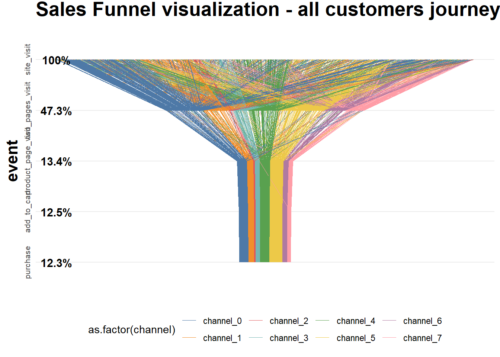
Calculate attribution
### computing attribution ###
df_attrib <- df_customers %>%
# removing customers without purchase
group_by(customer_id) %>%
filter(any(as.character(event) == 'purchase')) %>%
ungroup() %>%
# joining step's importances
left_join(., sf_probs %>% select(event, sf_importance_weighted), by = 'event') %>%
group_by(channel) %>%
summarise(tot_attribution = sum(sf_importance_weighted)) %>%
ungroup()22.2.2 Example 2
Code from Sergey Bryl
library(dplyr)
library(ggplot2)
library(reshape2)
# creating a data samples
# content
df.content <- data.frame(
content = c(
'main',
'ad landing',
'product 1',
'product 2',
'product 3',
'product 4',
'shopping cart',
'thank you page'
),
step = c(
'awareness',
'awareness',
'interest',
'interest',
'interest',
'interest',
'desire',
'action'
),
number = c(150000, 80000,
80000, 40000, 35000, 25000,
130000,
120000)
)
# customers
df.customers <- data.frame(
content = c('new', 'engaged', 'loyal'),
step = c('new', 'engaged', 'loyal'),
number = c(25000, 40000, 55000)
)
# combining two data sets
df.all <- rbind(df.content, df.customers)
# calculating dummies, max and min values of X for plotting
df.all <- df.all %>%
group_by(step) %>%
mutate(totnum = sum(number)) %>%
ungroup() %>%
mutate(dum = (max(totnum) - totnum) / 2,
maxx = totnum + dum,
minx = dum)
# data frame for plotting funnel lines
df.lines <- df.all %>%
distinct(step, maxx, minx)
# data frame with dummies
df.dum <- df.all %>%
distinct(step, dum) %>%
mutate(content = 'dummy',
number = dum) %>%
select(content, step, number)
# data frame with rates
conv <- df.all$totnum[df.all$step == 'action']
df.rates <- df.all %>%
distinct(step, totnum) %>%
mutate(
prevnum = lag(totnum),
rate = ifelse(
step == 'new' | step == 'engaged' | step == 'loyal',
round(totnum / conv, 3),
round(totnum / prevnum, 3)
)
) %>%
select(step, rate)
df.rates <- na.omit(df.rates)
# creting final data frame
df.all <- df.all %>%
select(content, step, number)
df.all <- rbind(df.all, df.dum)
# defining order of steps
df.all$step <-
factor(
df.all$step,
levels = c(
'loyal',
'engaged',
'new',
'action',
'desire',
'interest',
'awareness'
)
)
df.all <- df.all %>%
arrange(desc(step))
list1 <- df.all %>% distinct(content) %>%
filter(content != 'dummy')
df.all$content <-
factor(df.all$content, levels = c(as.character(list1$content), 'dummy'))
# calculating position of labels
df.all <- df.all %>%
arrange(step, desc(content)) %>%
group_by(step) %>%
mutate(pos = cumsum(number) - 0.5 * number) %>%
ungroup()
# creating custom palette with 'white' color for dummies
cols <- c(
"#fec44f",
"#fc9272",
"#a1d99b",
"#fee0d2",
"#2ca25f",
"#8856a7",
"#43a2ca",
"#fdbb84",
"#e34a33",
"#a6bddb",
"#dd1c77",
"#ffffff"
)
# plotting chart
ggplot() +
theme_minimal() +
coord_flip() +
scale_fill_manual(values = cols) +
geom_bar(
data = df.all,
aes(x = step, y = number, fill = content),
stat = "identity",
width = 1
) +
geom_text(
data = df.all[df.all$content != 'dummy',],
aes(
x = step,
y = pos,
label = paste0(content, '-', number / 1000, 'K')
),
size = 4,
color = 'white',
fontface = "bold"
) +
geom_ribbon(data = df.lines,
aes(
x = step,
ymax = max(maxx),
ymin = maxx,
group = 1
),
fill = 'white') +
geom_line(
data = df.lines,
aes(x = step, y = maxx, group = 1),
color = 'darkred',
size = 4
) +
geom_ribbon(data = df.lines,
aes(
x = step,
ymax = minx,
ymin = min(minx),
group = 1
),
fill = 'white') +
geom_line(
data = df.lines,
aes(x = step, y = minx, group = 1),
color = 'darkred',
size = 4
) +
geom_text(
data = df.rates,
aes(
x = step,
y = (df.lines$minx[-1]),
label = paste0(rate * 100, '%')
),
hjust = 1.2,
color = 'darkblue',
fontface = "bold"
) +
theme(
legend.position = 'none',
axis.ticks = element_blank(),
axis.text.x = element_blank(),
axis.title.x = element_blank()
)
22.3 RFM
RFM is calculated as:
- A recency score is assigned to each customer based on date of most recent purchase.
- A frequency ranking is assigned based on frequency of purchases
- Monetary score is assigned based on the total revenue generated by the customer in the period under consideration for the analysis
## # A tibble: 39,999 × 5
## customer_id revenue most_recent_visit number_of_orders recency_days
## <dbl> <dbl> <date> <dbl> <dbl>
## 1 22086 777 2006-05-14 9 232
## 2 2290 1555 2006-09-08 16 115
## 3 26377 336 2006-11-19 5 43
## 4 24650 1189 2006-10-29 12 64
## 5 12883 1229 2006-12-09 12 23
## 6 2119 929 2006-10-21 11 72
## 7 31283 1569 2006-09-11 17 112
## 8 33815 778 2006-08-12 11 142
## 9 15972 641 2006-11-19 9 43
## 10 27650 970 2006-08-23 10 131
## # ℹ 39,989 more rows
# a unique customer id
# number of transaction/order
# total revenue from the customer
# number of days since the last visit
rfm_data_orders # to generate data_orders, use rfm_table_order()## # A tibble: 4,906 × 3
## customer_id order_date revenue
## <chr> <date> <dbl>
## 1 Mr. Brion Stark Sr. 2004-12-20 32
## 2 Ethyl Botsford 2005-05-02 36
## 3 Hosteen Jacobi 2004-03-06 116
## 4 Mr. Edw Frami 2006-03-15 99
## 5 Josef Lemke 2006-08-14 76
## 6 Julisa Halvorson 2005-05-28 56
## 7 Judyth Lueilwitz 2005-03-09 108
## 8 Mr. Mekhi Goyette 2005-09-23 183
## 9 Hansford Moen PhD 2005-09-07 30
## 10 Fount Flatley 2006-04-12 13
## # ℹ 4,896 more rows
# unique customer id
# date of transaction
# and amount
# customer_id: name of the customer id column
# order_date: name of the transaction date column
# revenue: name of the transaction amount column
# analysis_date: date of analysis
# recency_bins: number of rankings for recency score (default is 5)
# frequency_bins: number of rankings for frequency score (default is 5)
# monetary_bins: number of rankings for monetary score (default is 5)
analysis_date <- lubridate::as_date('2007-01-01')
rfm_result <-
rfm_table_customer(
rfm_data_customer,
customer_id,
number_of_orders,
recency_days,
revenue,
analysis_date
)
rfm_result## # A tibble: 39,999 × 8
## customer_id recency_days transaction_count amount recency_score
## <dbl> <dbl> <dbl> <dbl> <int>
## 1 22086 232 9 777 2
## 2 2290 115 16 1555 4
## 3 26377 43 5 336 5
## 4 24650 64 12 1189 5
## 5 12883 23 12 1229 5
## 6 2119 72 11 929 5
## 7 31283 112 17 1569 4
## 8 33815 142 11 778 3
## 9 15972 43 9 641 5
## 10 27650 131 10 970 3
## # ℹ 39,989 more rows
## # ℹ 3 more variables: frequency_score <int>, monetary_score <int>,
## # rfm_score <dbl>
# customer_id: unique customer id
# date_most_recent: date of most recent visit
# recency_days: days since the most recent visit
# transaction_count: number of transactions of the customer
# amount: total revenue generated by the customer
# recency_score: recency score of the customer
# frequency_score: frequency score of the customer
# monetary_score: monetary score of the customer
# rfm_score: RFM score of the customer22.3.1 Visualization
heat map shows the average monetary value for different categories of recency and frequency scores
rfm_heatmap(rfm_result)
bar chart
rfm_bar_chart(rfm_result)
histogram
rfm_histograms(rfm_result)
Customers by Orders
rfm_order_dist(rfm_result)
Scatter Plots
rfm_rm_plot(rfm_result)
rfm_fm_plot(rfm_result)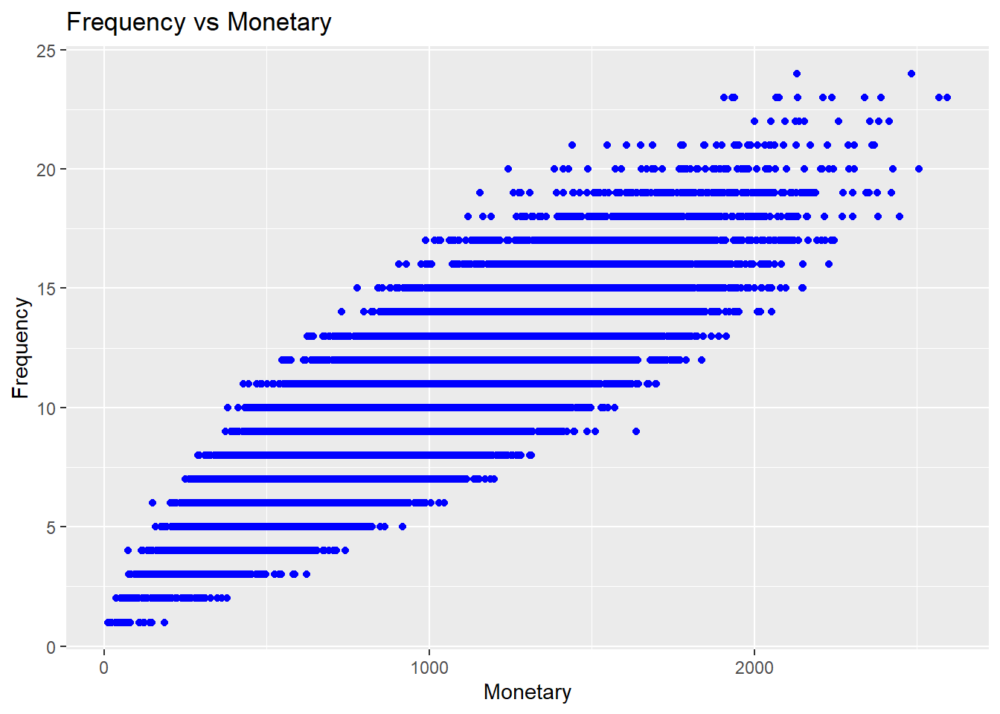
rfm_rf_plot(rfm_result)
22.3.2 RFMC
- clumpiness is defined as the degree of nonconformity to equal spacing (Yao Zhang, Bradlow, and Small 2015)
In finance, clumpiness can indicate high growth potential but large risk, Hence, it can be incorporated into firm acquisition decision. Originated from sports phenomenon - hot hand effect - where success leads to more success.
In statistics, clumpiness is the serial dependence or “non-constant propensity, specifically temporary elevations of propensity— i.e. periods during which one event is more likely to occur than the average level.” (Yao Zhang, Bradlow, and Small 2013)
Properties of clumpiness:
- Min (max) if events are equally spaced (close to one another)
- Continuity
- Convergence
22.4 Customer Segmentation
22.4.1 Example 1
Continue from the RFM
segment_names <-
c(
"Premium",
"Loyal Customers",
"Potential Loyalist",
"New Customers",
"Promising",
"Need Attention",
"About To Churn",
"At Risk",
"High Value Churners/Resurrection",
"Low Value Churners"
)
recency_lower <- c(4, 2, 3, 4, 3, 2, 2, 1, 1, 1)
recency_upper <- c(5, 5, 5, 5, 4, 3, 3, 2, 1, 2)
frequency_lower <- c(4, 3, 1, 1, 1, 2, 1, 2, 4, 1)
frequency_upper <- c(5, 5, 3, 1, 1, 3, 2, 5, 5, 2)
monetary_lower <- c(4, 3, 1, 1, 1, 2, 1, 2, 4, 1)
monetary_upper <- c(5, 5, 3, 1, 1, 3, 2, 5, 5, 2)
rfm_segments <-
rfm_segment(
rfm_result,
segment_names,
recency_lower,
recency_upper,
frequency_lower,
frequency_upper,
monetary_lower,
monetary_upper
)
head(rfm_segments, n = 5)
rfm_segments %>%
count(rfm_segments$segment) %>%
arrange(desc(n)) %>%
rename(Count = n)
# median recency
rfm_plot_median_recency(rfm_segments)
# median frequency
rfm_plot_median_frequency(rfm_segments)
# Median Monetary Value
rfm_plot_median_monetary(rfm_segments)22.4.2 Example 2
Example by Sergey
22.4.2.1 LifeCycle Grids
# loading libraries
library(dplyr)
library(reshape2)
library(ggplot2)
# creating data sample
set.seed(10)
data <- data.frame(
orderId = sample(c(1:1000), 5000, replace = TRUE),
product = sample(
c('NULL', 'a', 'b', 'c'),
5000,
replace = TRUE,
prob = c(0.15, 0.65, 0.3, 0.15)
)
)
order <- data.frame(orderId = c(1:1000),
clientId = sample(c(1:300), 1000, replace = TRUE))
gender <- data.frame(clientId = c(1:300),
gender = sample(
c('male', 'female'),
300,
replace = TRUE,
prob = c(0.40, 0.60)
))
date <- data.frame(orderId = c(1:1000),
orderdate = sample((1:100), 1000, replace = TRUE))
orders <- merge(data, order, by = 'orderId')
orders <- merge(orders, gender, by = 'clientId')
orders <- merge(orders, date, by = 'orderId')
orders <- orders[orders$product != 'NULL',]
orders$orderdate <- as.Date(orders$orderdate, origin = "2012-01-01")
rm(data, date, order, gender)
# reporting date
today <- as.Date('2012-04-11', format = '%Y-%m-%d')
# processing data
orders <-
dcast(
orders,
orderId + clientId + gender + orderdate ~ product,
value.var = 'product',
fun.aggregate = length
)
orders <- orders %>%
group_by(clientId) %>%
mutate(frequency = n(),
recency = as.numeric(today - orderdate)) %>%
filter(orderdate == max(orderdate)) %>%
filter(orderId == max(orderId)) %>%
ungroup()
# exploratory analysis
ggplot(orders, aes(x = frequency)) +
theme_bw() +
scale_x_continuous(breaks = c(1:10)) +
geom_bar(alpha = 0.6, width = 1) +
ggtitle("Dustribution by frequency")
ggplot(orders, aes(x = recency)) +
theme_bw() +
geom_bar(alpha = 0.6, width = 1) +
ggtitle("Dustribution by recency")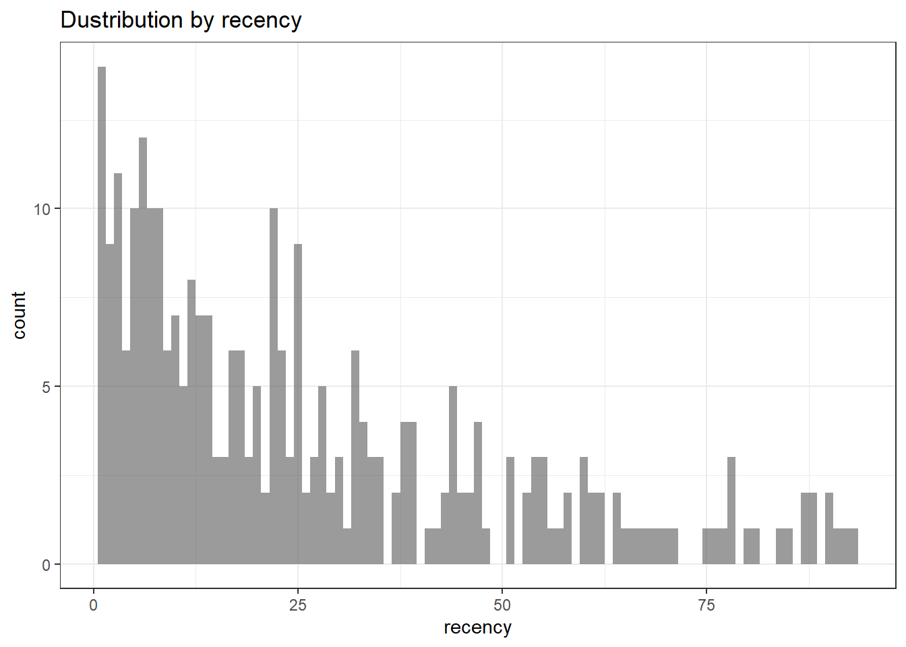
orders.segm <- orders %>%
mutate(segm.freq = ifelse(between(frequency, 1, 1), '1',
ifelse(
between(frequency, 2, 2), '2',
ifelse(between(frequency, 3, 3), '3',
ifelse(
between(frequency, 4, 4), '4',
ifelse(between(frequency, 5, 5), '5', '>5')
))
))) %>%
mutate(segm.rec = ifelse(
between(recency, 0, 6),
'0-6 days',
ifelse(
between(recency, 7, 13),
'7-13 days',
ifelse(
between(recency, 14, 19),
'14-19 days',
ifelse(
between(recency, 20, 45),
'20-45 days',
ifelse(between(recency, 46, 80), '46-80 days', '>80 days')
)
)
)
)) %>%
# creating last cart feature
mutate(cart = paste(
ifelse(a != 0, 'a', ''),
ifelse(b != 0, 'b', ''),
ifelse(c != 0, 'c', ''),
sep = ''
)) %>%
arrange(clientId)
# defining order of boundaries
orders.segm$segm.freq <-
factor(orders.segm$segm.freq, levels = c('>5', '5', '4', '3', '2', '1'))
orders.segm$segm.rec <-
factor(
orders.segm$segm.rec,
levels = c(
'>80 days',
'46-80 days',
'20-45 days',
'14-19 days',
'7-13 days',
'0-6 days'
)
)
lcg <- orders.segm %>%
group_by(segm.rec, segm.freq) %>%
summarise(quantity = n()) %>%
mutate(client = 'client') %>%
ungroup()
lcg.matrix <-
dcast(lcg,
segm.freq ~ segm.rec,
value.var = 'quantity',
fun.aggregate = sum)
ggplot(lcg, aes(x = client, y = quantity, fill = quantity)) +
theme_bw() +
theme(panel.grid = element_blank()) +
geom_bar(stat = 'identity', alpha = 0.6) +
geom_text(aes(y = max(quantity) / 2, label = quantity), size = 4) +
facet_grid(segm.freq ~ segm.rec) +
ggtitle("LifeCycle Grids")
lcg.adv <- lcg %>%
mutate(
rec.type = ifelse(
segm.rec %in% c("> 80 days", "46 - 80 days", "20 - 45 days"),
"not recent",
"recent"
),
freq.type = ifelse(segm.freq %in% c(" >
5", "5", "4"), "frequent", "infrequent"),
customer.type = interaction(rec.type, freq.type)
)
ggplot(lcg.adv, aes(x = client, y = quantity, fill = customer.type)) +
theme_bw() +
theme(panel.grid = element_blank()) +
facet_grid(segm.freq ~ segm.rec) +
geom_bar(stat = 'identity', alpha = 0.6) +
geom_text(aes(y = max(quantity) / 2, label = quantity), size = 4) +
ggtitle("LifeCycle Grids")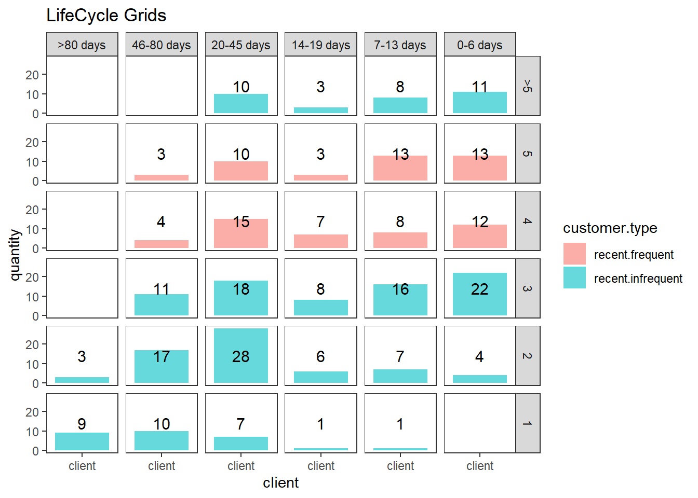
# with background
ggplot(lcg.adv, aes(x = client, y = quantity, fill = customer.type)) +
theme_bw() +
theme(panel.grid = element_blank()) +
geom_rect(
aes(fill = customer.type),
xmin = -Inf,
xmax = Inf,
ymin = -Inf,
ymax = Inf,
alpha = 0.1
) +
facet_grid(segm.freq ~ segm.rec) +
geom_bar(stat = 'identity', alpha = 0.7) +
geom_text(aes(y = max(quantity) / 2, label = quantity), size = 4) +
ggtitle("LifeCycle Grids")
lcg.sub <- orders.segm %>%
group_by(gender, cart, segm.rec, segm.freq) %>%
summarise(quantity = n()) %>%
mutate(client = 'client') %>%
ungroup()
ggplot(lcg.sub, aes(x = client, y = quantity, fill = gender)) +
theme_bw() +
scale_fill_brewer(palette = 'Set1') +
theme(panel.grid = element_blank()) +
geom_bar(stat = 'identity',
position = 'fill' ,
alpha = 0.6) +
facet_grid(segm.freq ~ segm.rec) +
ggtitle("LifeCycle Grids by gender (propotion)")
ggplot(lcg.sub, aes(x = gender, y = quantity, fill = cart)) +
theme_bw() +
scale_fill_brewer(palette = 'Set1') +
theme(panel.grid = element_blank()) +
geom_bar(stat = 'identity',
position = 'fill' ,
alpha = 0.6) +
facet_grid(segm.freq ~ segm.rec) +
ggtitle("LifeCycle Grids by gender and last cart (propotion)")
22.4.2.2 CLV & CAC
calculate customer acquisition cost (CAC) and customer lifetime value (CLV)
# loading libraries
library(dplyr)
library(reshape2)
library(ggplot2)
# creating data sample
set.seed(10)
data <- data.frame(
orderId = sample(c(1:1000), 5000, replace = TRUE),
product = sample(
c('NULL', 'a', 'b', 'c'),
5000,
replace = TRUE,
prob = c(0.15, 0.65, 0.3, 0.15)
)
)
order <- data.frame(orderId = c(1:1000),
clientId = sample(c(1:300), 1000, replace = TRUE))
gender <- data.frame(clientId = c(1:300),
gender = sample(
c('male', 'female'),
300,
replace = TRUE,
prob = c(0.40, 0.60)
))
date <- data.frame(orderId = c(1:1000),
orderdate = sample((1:100), 1000, replace = TRUE))
orders <- merge(data, order, by = 'orderId')
orders <- merge(orders, gender, by = 'clientId')
orders <- merge(orders, date, by = 'orderId')
orders <- orders[orders$product != 'NULL', ]
orders$orderdate <- as.Date(orders$orderdate, origin = "2012-01-01")
# creating data frames with CAC and Gross margin
cac <-
data.frame(clientId = unique(orders$clientId),
cac = sample(c(10:15), 288, replace = TRUE))
gr.margin <-
data.frame(product = c('a', 'b', 'c'),
grossmarg = c(1, 2, 3))
rm(data, date, order, gender)
# reporting date
today <- as.Date('2012-04-11', format = '%Y-%m-%d')
# calculating customer lifetime value
orders <- merge(orders, gr.margin, by = 'product')
clv <- orders %>%
group_by(clientId) %>%
summarise(clv = sum(grossmarg)) %>%
ungroup()
# processing data
orders <-
dcast(
orders,
orderId + clientId + gender + orderdate ~ product,
value.var = 'product',
fun.aggregate = length
)
orders <- orders %>%
group_by(clientId) %>%
mutate(frequency = n(),
recency = as.numeric(today - orderdate)) %>%
filter(orderdate == max(orderdate)) %>%
filter(orderId == max(orderId)) %>%
ungroup()
orders.segm <- orders %>%
mutate(segm.freq = ifelse(between(frequency, 1, 1), '1',
ifelse(
between(frequency, 2, 2), '2',
ifelse(between(frequency, 3, 3), '3',
ifelse(
between(frequency, 4, 4), '4',
ifelse(between(frequency, 5, 5), '5', '>5')
))
))) %>%
mutate(segm.rec = ifelse(
between(recency, 0, 6),
'0-6 days',
ifelse(
between(recency, 7, 13),
'7-13 days',
ifelse(
between(recency, 14, 19),
'14-19 days',
ifelse(
between(recency, 20, 45),
'20-45 days',
ifelse(between(recency, 46, 80), '46-80 days', '>80 days')
)
)
)
)) %>%
# creating last cart feature
mutate(cart = paste(
ifelse(a != 0, 'a', ''),
ifelse(b != 0, 'b', ''),
ifelse(c != 0, 'c', ''),
sep = ''
)) %>%
arrange(clientId)
# defining order of boundaries
orders.segm$segm.freq <-
factor(orders.segm$segm.freq, levels = c('>5', '5', '4', '3', '2', '1'))
orders.segm$segm.rec <-
factor(
orders.segm$segm.rec,
levels = c(
'>80 days',
'46-80 days',
'20-45 days',
'14-19 days',
'7-13 days',
'0-6 days'
)
)
orders.segm <- merge(orders.segm, cac, by = 'clientId')
orders.segm <- merge(orders.segm, clv, by = 'clientId')
lcg.clv <- orders.segm %>%
group_by(segm.rec, segm.freq) %>%
summarise(quantity = n(),
# calculating cumulative CAC and CLV
cac = sum(cac),
clv = sum(clv)) %>%
ungroup() %>%
# calculating CAC and CLV per client
mutate(cac1 = round(cac / quantity, 2),
clv1 = round(clv / quantity, 2))
lcg.clv <-
reshape2::melt(lcg.clv, id.vars = c('segm.rec', 'segm.freq', 'quantity'))
ggplot(lcg.clv[lcg.clv$variable %in% c('clv', 'cac'), ], aes(x = variable, y =
value, fill = variable)) +
theme_bw() +
theme(panel.grid = element_blank()) +
geom_bar(stat = 'identity', alpha = 0.6, aes(width = quantity / max(quantity))) +
geom_text(aes(y = value, label = value), size = 4) +
facet_grid(segm.freq ~ segm.rec) +
ggtitle("LifeCycle Grids - CLV vs CAC (total)")
ggplot(lcg.clv[lcg.clv$variable %in% c('clv1', 'cac1'), ], aes(x = variable, y =
value, fill = variable)) +
theme_bw() +
theme(panel.grid = element_blank()) +
geom_bar(stat = 'identity', alpha = 0.6, aes(width = quantity / max(quantity))) +
geom_text(aes(y = value, label = value), size = 4) +
facet_grid(segm.freq ~ segm.rec) +
ggtitle("LifeCycle Grids - CLV vs CAC (average)")
22.4.2.3 Cohort Analysis
combine customers through common characteristics to split customers into homogeneous groups
# loading libraries
library(dplyr)
library(reshape2)
library(ggplot2)
library(googleVis)
set.seed(10)
# creating orders data sample
data <- data.frame(
orderId = sample(c(1:5000), 25000, replace = TRUE),
product = sample(
c('NULL', 'a', 'b', 'c'),
25000,
replace = TRUE,
prob = c(0.15, 0.65, 0.3, 0.15)
)
)
order <- data.frame(orderId = c(1:5000),
clientId = sample(c(1:1500), 5000, replace = TRUE))
date <- data.frame(orderId = c(1:5000),
orderdate = sample((1:500), 5000, replace = TRUE))
orders <- merge(data, order, by = 'orderId')
orders <- merge(orders, date, by = 'orderId')
orders <- orders[orders$product != 'NULL',]
orders$orderdate <- as.Date(orders$orderdate, origin = "2012-01-01")
rm(data, date, order)
# creating data frames with CAC, Gross margin, Campaigns and Potential CLV
gr.margin <-
data.frame(product = c('a', 'b', 'c'),
grossmarg = c(1, 2, 3))
campaign <- data.frame(clientId = c(1:1500),
campaign = paste('campaign', sample(c(1:7), 1500, replace = TRUE), sep =
' '))
cac <-
data.frame(campaign = unique(campaign$campaign),
cac = sample(c(10:15), 7, replace = TRUE))
campaign <- merge(campaign, cac, by = 'campaign')
potential <- data.frame(clientId = c(1:1500),
clv.p = sample(c(0:50), 1500, replace = TRUE))
rm(cac)
# reporting date
today <- as.Date('2013-05-16', format = '%Y-%m-%d')where
- campaign, which includes campaign name and customer acquisition cost for each customer,
- margin, which includes gross margin for each product,
- potential, which includes potential values / predicted CLV for each client,
- orders, which includes orders from our customers with products and order dates.
# calculating CLV, frequency, recency, average time lapses between purchases and defining cohorts
orders <- merge(orders, gr.margin, by = 'product')
customers <- orders %>%
# combining products and summarising gross margin
group_by(orderId, clientId, orderdate) %>%
summarise(grossmarg = sum(grossmarg)) %>%
ungroup() %>%
# calculating frequency, recency, average time lapses between purchases and defining cohorts
group_by(clientId) %>%
mutate(
frequency = n(),
recency = as.numeric(today - max(orderdate)),
av.gap = round(as.numeric(max(orderdate) - min(orderdate)) / frequency, 0),
cohort = format(min(orderdate), format = '%Y-%m')
) %>%
ungroup() %>%
# calculating CLV to date
group_by(clientId, cohort, frequency, recency, av.gap) %>%
summarise(clv = sum(grossmarg)) %>%
arrange(clientId) %>%
ungroup()
# calculating potential CLV and CAC
customers <- merge(customers, campaign, by = 'clientId')
customers <- merge(customers, potential, by = 'clientId')
# leading the potential value to more or less real value
customers$clv.p <-
round(customers$clv.p / sqrt(customers$recency) * customers$frequency,
2)
rm(potential, gr.margin, today)
# adding segments
customers <- customers %>%
mutate(segm.freq = ifelse(between(frequency, 1, 1), '1',
ifelse(
between(frequency, 2, 2), '2',
ifelse(between(frequency, 3, 3), '3',
ifelse(
between(frequency, 4, 4), '4',
ifelse(between(frequency, 5, 5), '5', '>5')
))
))) %>%
mutate(segm.rec = ifelse(
between(recency, 0, 30),
'0-30 days',
ifelse(
between(recency, 31, 60),
'31-60 days',
ifelse(
between(recency, 61, 90),
'61-90 days',
ifelse(
between(recency, 91, 120),
'91-120 days',
ifelse(between(recency, 121, 180), '121-180 days', '>180 days')
)
)
)
))
# defining order of boundaries
customers$segm.freq <-
factor(customers$segm.freq, levels = c('>5', '5', '4', '3', '2', '1'))
customers$segm.rec <-
factor(
customers$segm.rec,
levels = c(
'>180 days',
'121-180 days',
'91-120 days',
'61-90 days',
'31-60 days',
'0-30 days'
)
)22.4.2.3.1 First-purchase date cohort
lcg.coh <- customers %>%
group_by(cohort, segm.rec, segm.freq) %>%
# calculating cumulative values
summarise(
quantity = n(),
cac = sum(cac),
clv = sum(clv),
clv.p = sum(clv.p),
av.gap = sum(av.gap)
) %>%
ungroup() %>%
# calculating average values
mutate(
av.cac = round(cac / quantity, 2),
av.clv = round(clv / quantity, 2),
av.clv.p = round(clv.p / quantity, 2),
av.clv.tot = av.clv + av.clv.p,
av.gap = round(av.gap / quantity, 2),
diff = av.clv - av.cac
)
# 1. Structure of averages and comparison cohorts
ggplot(lcg.coh, aes(x = cohort, fill = cohort)) +
theme_bw() +
theme(panel.grid = element_blank()) +
geom_bar(aes(y = diff), stat = 'identity', alpha = 0.5) +
geom_text(aes(y = diff, label = round(diff, 0)), size = 4) +
facet_grid(segm.freq ~ segm.rec) +
theme(axis.text.x = element_text(
angle = 90,
hjust = .5,
vjust = .5,
face = "plain"
)) +
ggtitle("Cohorts in LifeCycle Grids - difference between av.CLV to date and av.CAC")
ggplot(lcg.coh, aes(x = cohort, fill = cohort)) +
theme_bw() +
theme(panel.grid = element_blank()) +
geom_bar(aes(y = av.clv.tot), stat = 'identity', alpha = 0.2) +
geom_text(aes(
y = av.clv.tot + 10,
label = round(av.clv.tot, 0),
color = cohort
), size = 4) +
geom_bar(aes(y = av.clv), stat = 'identity', alpha = 0.7) +
geom_errorbar(aes(y = av.cac, ymax = av.cac, ymin = av.cac),
color = 'red',
size = 1.2) +
geom_text(
aes(y = av.cac, label = round(av.cac, 0)),
size = 4,
color = 'darkred',
vjust = -.5
) +
facet_grid(segm.freq ~ segm.rec) +
theme(axis.text.x = element_text(
angle = 90,
hjust = .5,
vjust = .5,
face = "plain"
)) +
ggtitle("Cohorts in LifeCycle Grids - total av.CLV and av.CAC")
# 2. Analyzing customer flows
# customers flows analysis (FPD cohorts)
# defining cohort and reporting dates
coh <- '2012-09'
report.dates <- c('2012-10-01', '2013-01-01', '2013-04-01')
report.dates <- as.Date(report.dates, format = '%Y-%m-%d')
# defining segments for each cohort's customer for reporting dates
df.sankey <- data.frame()
for (i in 1:length(report.dates)) {
orders.cache <- orders %>%
filter(orderdate < report.dates[i])
customers.cache <- orders.cache %>%
select(-product,-grossmarg) %>%
unique() %>%
group_by(clientId) %>%
mutate(
frequency = n(),
recency = as.numeric(report.dates[i] - max(orderdate)),
cohort = format(min(orderdate), format = '%Y-%m')
) %>%
ungroup() %>%
select(clientId, frequency, recency, cohort) %>%
unique() %>%
filter(cohort == coh) %>%
mutate(segm.freq = ifelse(
between(frequency, 1, 1),
'1 purch',
ifelse(
between(frequency, 2, 2),
'2 purch',
ifelse(
between(frequency, 3, 3),
'3 purch',
ifelse(
between(frequency, 4, 4),
'4 purch',
ifelse(between(frequency, 5, 5), '5 purch', '>5 purch')
)
)
)
)) %>%
mutate(segm.rec = ifelse(
between(recency, 0, 30),
'0-30 days',
ifelse(
between(recency, 31, 60),
'31-60 days',
ifelse(
between(recency, 61, 90),
'61-90 days',
ifelse(
between(recency, 91, 120),
'91-120 days',
ifelse(between(recency, 121, 180), '121-180 days', '>180 days')
)
)
)
)) %>%
mutate(
cohort.segm = paste(cohort, segm.rec, segm.freq, sep = ' : '),
report.date = report.dates[i]
) %>%
select(clientId, cohort.segm, report.date)
df.sankey <- rbind(df.sankey, customers.cache)
}
# processing data for Sankey diagram format
df.sankey <-
dcast(df.sankey,
clientId ~ report.date,
value.var = 'cohort.segm',
fun.aggregate = NULL)
write.csv(df.sankey, 'customers_path.csv', row.names = FALSE)
df.sankey <- df.sankey %>% select(-clientId)
df.sankey.plot <- data.frame()
for (i in 2:ncol(df.sankey)) {
df.sankey.cache <- df.sankey %>%
group_by(df.sankey[, i - 1], df.sankey[, i]) %>%
summarise(n = n()) %>%
ungroup()
colnames(df.sankey.cache)[1:2] <- c('from', 'to')
df.sankey.cache$from <-
paste(df.sankey.cache$from, ' (', report.dates[i - 1], ')', sep = '')
df.sankey.cache$to <-
paste(df.sankey.cache$to, ' (', report.dates[i], ')', sep = '')
df.sankey.plot <- rbind(df.sankey.plot, df.sankey.cache)
}
# plotting
plot(gvisSankey(
df.sankey.plot,
from = 'from',
to = 'to',
weight = 'n',
options = list(
height = 900,
width = 1800,
sankey = "{link:{color:{fill:'lightblue'}}}"
)
))
# purchasing pace
ggplot(lcg.coh, aes(x = cohort, fill = cohort)) +
theme_bw() +
theme(panel.grid = element_blank()) +
geom_bar(aes(y = av.gap), stat = 'identity', alpha = 0.6) +
geom_text(aes(y = av.gap, label = round(av.gap, 0)), size = 4) +
facet_grid(segm.freq ~ segm.rec) +
theme(axis.text.x = element_text(
angle = 90,
hjust = .5,
vjust = .5,
face = "plain"
)) +
ggtitle("Cohorts in LifeCycle Grids - average time lapses between purchases")22.4.2.3.2 Campaign Cohorts
# campaign cohorts
lcg.camp <- customers %>%
group_by(campaign, segm.rec, segm.freq) %>%
# calculating cumulative values
summarise(
quantity = n(),
cac = sum(cac),
clv = sum(clv),
clv.p = sum(clv.p),
av.gap = sum(av.gap)
) %>%
ungroup() %>%
# calculating average values
mutate(
av.cac = round(cac / quantity, 2),
av.clv = round(clv / quantity, 2),
av.clv.p = round(clv.p / quantity, 2),
av.clv.tot = av.clv + av.clv.p,
av.gap = round(av.gap / quantity, 2),
diff = av.clv - av.cac
)
ggplot(lcg.camp, aes(x = campaign, fill = campaign)) +
theme_bw() +
theme(panel.grid = element_blank()) +
geom_bar(aes(y = diff), stat = 'identity', alpha = 0.5) +
geom_text(aes(y = diff, label = round(diff, 0)), size = 4) +
facet_grid(segm.freq ~ segm.rec) +
theme(axis.text.x = element_text(
angle = 90,
hjust = .5,
vjust = .5,
face = "plain"
)) +
ggtitle("Campaigns in LifeCycle Grids - difference between av.CLV to date and av.CAC")
ggplot(lcg.camp, aes(x = campaign, fill = campaign)) +
theme_bw() +
theme(panel.grid = element_blank()) +
geom_bar(aes(y = av.clv.tot), stat = 'identity', alpha = 0.2) +
geom_text(aes(
y = av.clv.tot + 10,
label = round(av.clv.tot, 0),
color = campaign
), size = 4) +
geom_bar(aes(y = av.clv), stat = 'identity', alpha = 0.7) +
geom_errorbar(aes(y = av.cac, ymax = av.cac, ymin = av.cac),
color = 'red',
size = 1.2) +
geom_text(
aes(y = av.cac, label = round(av.cac, 0)),
size = 4,
color = 'darkred',
vjust = -.5
) +
facet_grid(segm.freq ~ segm.rec) +
theme(axis.text.x = element_text(
angle = 90,
hjust = .5,
vjust = .5,
face = "plain"
)) +
ggtitle("Campaigns in LifeCycle Grids - total av.CLV and av.CAC")
ggplot(lcg.camp, aes(x = campaign, fill = campaign)) +
theme_bw() +
theme(panel.grid = element_blank()) +
geom_bar(aes(y = av.gap), stat = 'identity', alpha = 0.6) +
geom_text(aes(y = av.gap, label = round(av.gap, 0)), size = 4) +
facet_grid(segm.freq ~ segm.rec) +
theme(axis.text.x = element_text(
angle = 90,
hjust = .5,
vjust = .5,
face = "plain"
)) +
ggtitle("Campaigns in LifeCycle Grids - average time lapses between purchases")
22.4.2.3.3 Retention Rate
# loading libraries
library(dplyr)
library(reshape2)
library(ggplot2)
library(scales)
library(gridExtra)
# creating data sample
set.seed(10)
cohorts <-
data.frame(
cohort = paste('cohort', formatC(
c(1:36),
width = 2,
format = 'd',
flag = '0'
), sep = '_'),
Y_00 = sample(c(1300:1500), 36, replace = TRUE),
Y_01 = c(sample(c(800:1000), 36, replace = TRUE)),
Y_02 = c(sample(c(600:800), 24, replace = TRUE), rep(NA, 12)),
Y_03 = c(sample(c(400:500), 12, replace = TRUE), rep(NA, 24))
)
# simulating seasonality (Black Friday)
cohorts[c(11, 23, 35), 2] <-
as.integer(cohorts[c(11, 23, 35), 2] * 1.25)
cohorts[c(11, 23, 35), 3] <-
as.integer(cohorts[c(11, 23, 35), 3] * 1.10)
cohorts[c(11, 23, 35), 4] <-
as.integer(cohorts[c(11, 23, 35), 4] * 1.07)
# calculating retention rate and preparing data for plotting
df_plot <-
reshape2::melt(
cohorts,
id.vars = 'cohort',
value.name = 'number',
variable.name = "year_of_LT"
)
df_plot <- df_plot %>%
group_by(cohort) %>%
arrange(year_of_LT) %>%
mutate(number_prev_year = lag(number),
number_Y_00 = number[which(year_of_LT == 'Y_00')]) %>%
ungroup() %>%
mutate(
ret_rate_prev_year = number / number_prev_year,
ret_rate = number / number_Y_00,
year_cohort = paste(year_of_LT, cohort, sep = '-')
)
##### The first way for plotting cycle plot via scaling
# calculating the coefficient for scaling 2nd axis
k <-
max(df_plot$number_prev_year[df_plot$year_of_LT == 'Y_01'] * 1.15) / min(df_plot$ret_rate[df_plot$year_of_LT == 'Y_01'])
# retention rate cycle plot
ggplot(
na.omit(df_plot),
aes(
x = year_cohort,
y = ret_rate,
group = year_of_LT,
color = year_of_LT
)
) +
theme_bw() +
geom_point(size = 4) +
geom_text(
aes(label = percent(round(ret_rate, 2))),
size = 4,
hjust = 0.4,
vjust = -0.6,
fontface = "plain"
) +
# smooth method can be changed (e.g. for "lm")
geom_smooth(
size = 2.5,
method = 'loess',
color = 'darkred',
aes(fill = year_of_LT)
) +
geom_bar(aes(y = number_prev_year / k, fill = year_of_LT),
alpha = 0.2,
stat = 'identity') +
geom_bar(aes(y = number / k, fill = year_of_LT),
alpha = 0.6,
stat = 'identity') +
geom_text(
aes(y = 0, label = cohort),
color = 'white',
angle = 90,
size = 4,
hjust = -0.05,
vjust = 0.4
) +
geom_text(
aes(y = number_prev_year / k, label = number_prev_year),
angle = 90,
size = 4,
hjust = -0.1,
vjust = 0.4
) +
geom_text(
aes(y = number / k, label = number),
angle = 90,
size = 4,
hjust = -0.1,
vjust = 0.4
) +
theme(
legend.position = 'none',
plot.title = element_text(size = 20, face = "bold", vjust = 2),
axis.title.x = element_text(size = 18, face = "bold"),
axis.title.y = element_text(size = 18, face = "bold"),
axis.text = element_text(size = 16),
axis.text.x = element_blank(),
axis.ticks.x = element_blank(),
axis.ticks.y = element_blank(),
panel.border = element_blank(),
panel.grid.major = element_blank(),
panel.grid.minor = element_blank()
) +
labs(x = 'Year of Lifetime by Cohorts', y = 'Number of Customers / Retention Rate') +
ggtitle("Customer Retention Rate - Cycle plot")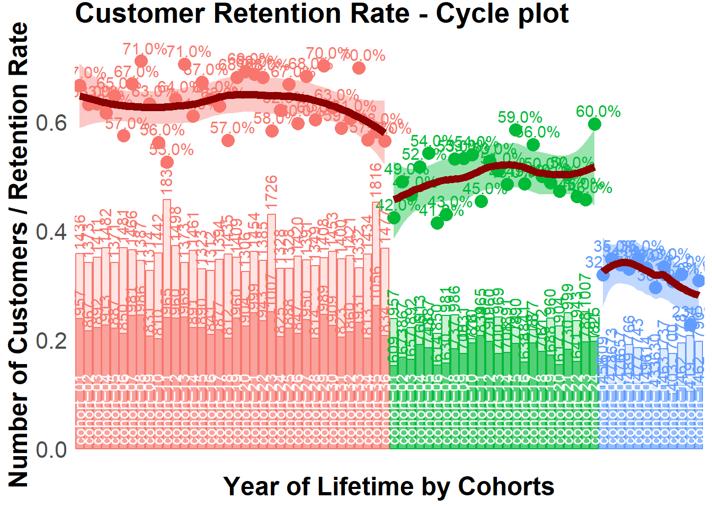
##### The second way for plotting cycle plot via multi-plotting
# plot #1 - Retention rate
p1 <-
ggplot(
na.omit(df_plot),
aes(
x = year_cohort,
y = ret_rate,
group = year_of_LT,
color = year_of_LT
)
) +
theme_bw() +
geom_point(size = 4) +
geom_text(
aes(label = percent(round(ret_rate, 2))),
size = 4,
hjust = 0.4,
vjust = -0.6,
fontface = "plain"
) +
geom_smooth(
size = 2.5,
method = 'loess',
color = 'darkred',
aes(fill = year_of_LT)
) +
theme(
legend.position = 'none',
plot.title = element_text(size = 20, face = "bold", vjust = 2),
axis.title.x = element_blank(),
axis.title.y = element_text(size = 18, face = "bold"),
axis.text = element_blank(),
axis.ticks.x = element_blank(),
axis.ticks.y = element_blank(),
panel.border = element_blank(),
panel.grid.major = element_blank(),
panel.grid.minor = element_blank()
) +
labs(y = 'Retention Rate') +
ggtitle("Customer Retention Rate - Cycle plot")
# plot #2 - number of customers
p2 <-
ggplot(na.omit(df_plot),
aes(x = year_cohort, group = year_of_LT, color = year_of_LT)) +
theme_bw() +
geom_bar(aes(y = number_prev_year, fill = year_of_LT),
alpha = 0.2,
stat = 'identity') +
geom_bar(aes(y = number, fill = year_of_LT),
alpha = 0.6,
stat = 'identity') +
geom_text(
aes(y = number_prev_year, label = number_prev_year),
angle = 90,
size = 4,
hjust = -0.1,
vjust = 0.4
) +
geom_text(
aes(y = number, label = number),
angle = 90,
size = 4,
hjust = -0.1,
vjust = 0.4
) +
geom_text(
aes(y = 0, label = cohort),
color = 'white',
angle = 90,
size = 4,
hjust = -0.05,
vjust = 0.4
) +
theme(
legend.position = 'none',
plot.title = element_text(size = 20, face = "bold", vjust = 2),
axis.title.x = element_text(size = 18, face = "bold"),
axis.title.y = element_text(size = 18, face = "bold"),
axis.text = element_blank(),
axis.ticks.x = element_blank(),
axis.ticks.y = element_blank(),
panel.border = element_blank(),
panel.grid.major = element_blank(),
panel.grid.minor = element_blank()
) +
scale_y_continuous(limits = c(0, max(df_plot$number_Y_00 * 1.1))) +
labs(x = 'Year of Lifetime by Cohorts', y = 'Number of Customers')
# multiplot
grid.arrange(p1, p2, ncol = 1)
# retention rate bubble chart
ggplot(na.omit(df_plot),
aes(
x = cohort,
y = ret_rate,
group = cohort,
color = year_of_LT
)) +
theme_bw() +
scale_size(range = c(15, 40)) +
geom_line(size = 2, alpha = 0.3) +
geom_point(aes(size = number_prev_year), alpha = 0.3) +
geom_point(aes(size = number), alpha = 0.8) +
geom_smooth(
linetype = 2,
size = 2,
method = 'loess',
aes(group = year_of_LT, fill = year_of_LT),
alpha = 0.2
) +
geom_text(
aes(label = paste0(
number, '/', number_prev_year, '\n', percent(round(ret_rate, 2))
)),
color = 'white',
size = 3,
hjust = 0.5,
vjust = 0.5,
fontface = "plain"
) +
theme(
legend.position = 'none',
plot.title = element_text(size = 20, face = "bold", vjust = 2),
axis.title.x = element_text(size = 18, face = "bold"),
axis.title.y = element_text(size = 18, face = "bold"),
axis.text = element_text(size = 16),
axis.text.x = element_text(
size = 10,
angle = 90,
hjust = .5,
vjust = .5,
face = "plain"
),
axis.ticks.x = element_blank(),
axis.ticks.y = element_blank(),
panel.border = element_blank(),
panel.grid.major = element_blank(),
panel.grid.minor = element_blank()
) +
labs(x = 'Cohorts', y = 'Retention Rate by Year of Lifetime') +
ggtitle("Customer Retention Rate - Bubble chart")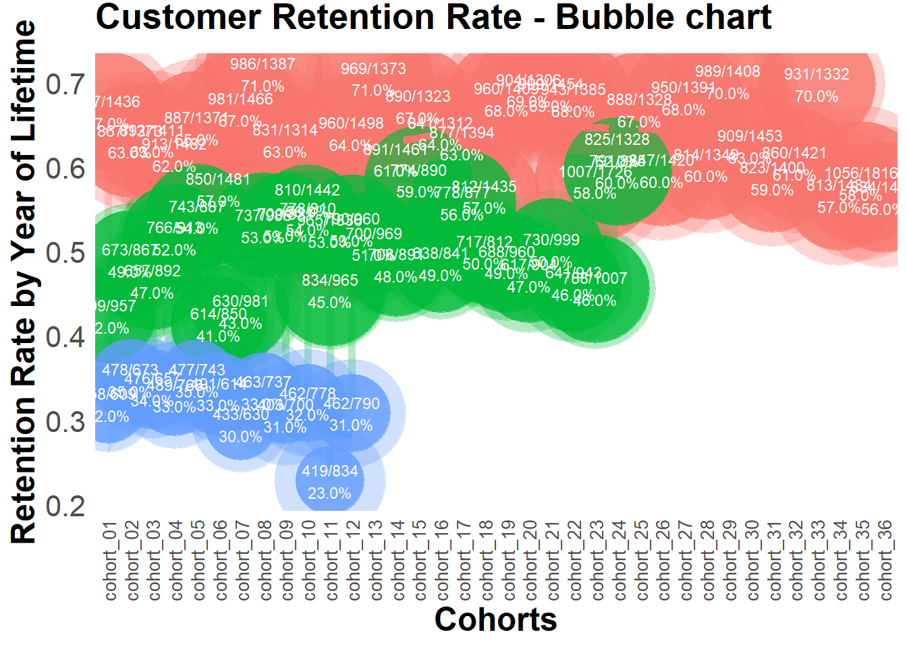
# retention rate falling drops chart
ggplot(df_plot,
aes(
x = cohort,
y = ret_rate,
group = cohort,
color = year_of_LT
)) +
theme_bw() +
scale_size(range = c(15, 40)) +
scale_y_continuous(limits = c(0, 1)) +
geom_line(size = 2, alpha = 0.3) +
geom_point(aes(size = number), alpha = 0.8) +
geom_text(
aes(label = paste0(number, '\n', percent(round(
ret_rate, 2
)))),
color = 'white',
size = 3,
hjust = 0.5,
vjust = 0.5,
fontface = "plain"
) +
theme(
legend.position = 'none',
plot.title = element_text(size = 20, face = "bold", vjust = 2),
axis.title.x = element_text(size = 18, face = "bold"),
axis.title.y = element_text(size = 18, face = "bold"),
axis.text = element_text(size = 16),
axis.text.x = element_text(
size = 10,
angle = 90,
hjust = .5,
vjust = .5,
face = "plain"
),
axis.ticks.x = element_blank(),
axis.ticks.y = element_blank(),
panel.border = element_blank(),
panel.grid.major = element_blank(),
panel.grid.minor = element_blank()
) +
labs(x = 'Cohorts', y = 'Retention Rate by Year of Lifetime') +
ggtitle("Customer Retention Rate - Falling Drops chart")22.4.2.3.4 Retention Charts
# libraries
library(dplyr)
library(ggplot2)
library(reshape2)
cohort.clients <- data.frame(
cohort = c(
'Cohort01',
'Cohort02',
'Cohort03',
'Cohort04',
'Cohort05',
'Cohort06',
'Cohort07',
'Cohort08',
'Cohort09',
'Cohort10',
'Cohort11',
'Cohort12'
),
M01 = c(11000, 0, 0, 0, 0, 0, 0, 0, 0, 0, 0, 0),
M02 = c(1900, 10000, 0, 0, 0, 0, 0, 0, 0, 0, 0, 0),
M03 = c(1400, 2000, 11500, 0, 0, 0, 0, 0, 0, 0, 0, 0),
M04 = c(1100, 1300, 2400, 13200, 0, 0, 0, 0, 0, 0, 0, 0),
M05 = c(1000, 1100, 1400, 2400, 11100, 0, 0, 0, 0, 0, 0, 0),
M06 = c(900, 900, 1200, 1600, 1900, 10300, 0, 0, 0, 0, 0, 0),
M07 = c(850, 900, 1100, 1300, 1300, 1900, 13000, 0, 0, 0, 0, 0),
M08 = c(850, 850, 1000, 1200, 1100, 1300, 1900, 11500, 0, 0, 0, 0),
M09 = c(800, 800, 950, 1100, 1100, 1250, 1000, 1200, 11000, 0, 0, 0),
M10 = c(800, 780, 900, 1050, 1050, 1200, 900, 1200, 1900, 13200, 0, 0),
M11 = c(750, 750, 900, 1000, 1000, 1180, 800, 1100, 1150, 2000, 11300, 0),
M12 = c(740, 700, 870, 1000, 900, 1100, 700, 1050, 1025, 1300, 1800, 20000)
)
cohort.clients.r <- cohort.clients #create new data frame
totcols <-
ncol(cohort.clients.r) #count number of columns in data set
for (i in 1:nrow(cohort.clients.r)) {
#for loop for shifting each row
df <- cohort.clients.r[i,] #select row from data frame
df <- df[, !df[] == 0] #remove columns with zeros
partcols <-
ncol(df) #count number of columns in row (w/o zeros)
#fill columns after values by zeros
if (partcols < totcols)
df[, c((partcols + 1):totcols)] <- 0
cohort.clients.r[i,] <- df #replace initial row by new one
}
# Retention ratio = # clients in particular month / # clients in 1st month of life-time
#calculate retention (1)
x <- cohort.clients.r[, c(2:13)]
y <- cohort.clients.r[, 2]
reten.r <- apply(x, 2, function(x)
x / y)
reten.r <- data.frame(cohort = (cohort.clients.r$cohort), reten.r)
#calculate retention (2)
c <- ncol(cohort.clients.r)
reten.r <- cohort.clients.r
for (i in 2:c) {
reten.r[, (c + i - 1)] <- reten.r[, i] / reten.r[, 2]
}
reten.r <- reten.r[,-c(2:c)]
colnames(reten.r) <- colnames(cohort.clients.r)
#charts
reten.r <- reten.r[,-2] #remove M01 data because it is always 100%
#dynamics analysis chart
cohort.chart1 <- melt(reten.r, id.vars = 'cohort')
colnames(cohort.chart1) <- c('cohort', 'month', 'retention')
cohort.chart1 <- filter(cohort.chart1, retention != 0)
p <-
ggplot(cohort.chart1,
aes(
x = month,
y = retention,
group = cohort,
colour = cohort
))
p + geom_line(size = 2, alpha = 1 / 2) +
geom_point(size = 3, alpha = 1) +
geom_smooth(
aes(group = 1),
method = 'loess',
size = 2,
colour = 'red',
se = FALSE
) +
labs(title = "Cohorts Retention ratio dynamics")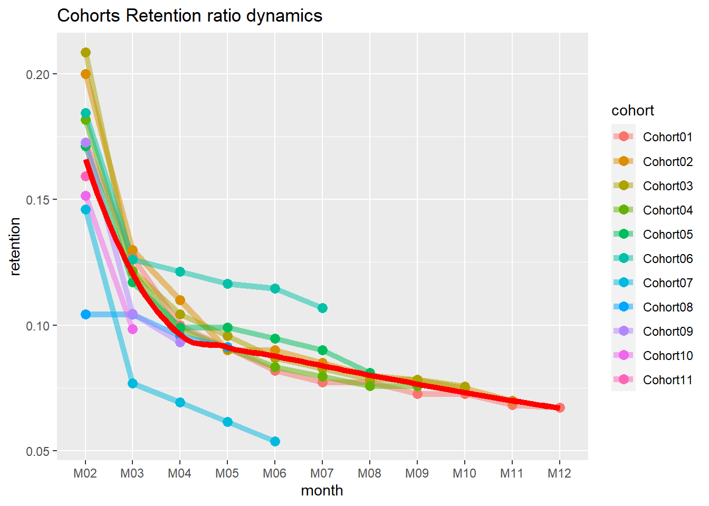
#second month analysis chart
cohort.chart2 <-
filter(cohort.chart1, month == 'M02') #choose any month instead of M02
p <-
ggplot(cohort.chart2, aes(x = cohort, y = retention, colour = cohort))
p + geom_point(size = 3) +
geom_line(aes(group = 1), size = 2, alpha = 1 / 2) +
geom_smooth(
aes(group = 1),
size = 2,
colour = 'red',
method = 'lm',
se = FALSE
) +
labs(title = "Cohorts Retention ratio for 2nd month")
#cycle plot
cohort.chart3 <- cohort.chart1
cohort.chart3 <-
mutate(cohort.chart3, month_cohort = paste(month, cohort))
p <-
ggplot(cohort.chart3,
aes(
x = month_cohort,
y = retention,
group = month,
colour = month
))
#choose any cohorts instead of Cohort07 and Cohort06
m1 <- filter(cohort.chart3, cohort == 'Cohort07')
m2 <- filter(cohort.chart3, cohort == 'Cohort06')
p + geom_point(size = 3) +
geom_line(aes(group = month), size = 2, alpha = 1 / 2) +
labs(title = "Cohorts Retention ratio cycle plot") +
geom_line(
data = m1,
aes(group = 1),
colour = 'blue',
size = 2,
alpha = 1 / 5
) +
geom_line(
data = m2,
aes(group = 1),
colour = 'blue',
size = 2,
alpha = 1 / 5
) +
theme(axis.text.x = element_text(angle = 90, hjust = 1))
22.4.2.4 Lifecycle phase sequential analysis
- analyze the path patterns of each cohort
- identify cohorts that attracted customers with the path we prefer to make offers.
library(TraMineR)
min.date <- min(orders$orderdate)
max.date <- max(orders$orderdate)
l <-
c(seq(0, as.numeric(max.date - min.date), 10), as.numeric(max.date - min.date))
df <- data.frame()
for (i in l) {
cur.date <- min.date + i
print(cur.date)
orders.cache <- orders %>%
filter(orderdate <= cur.date)
customers.cache <- orders.cache %>%
select(-product,-grossmarg) %>%
unique() %>%
group_by(clientId) %>%
mutate(frequency = n(),
recency = as.numeric(cur.date - max(orderdate))) %>%
ungroup() %>%
select(clientId, frequency, recency) %>%
unique() %>%
mutate(segm =
ifelse(
between(frequency, 1, 2) & between(recency, 0, 60),
'new customer',
ifelse(
between(frequency, 1, 2) &
between(recency, 61, 180),
'under risk new customer',
ifelse(
between(frequency, 1, 2) & recency > 180,
'1x buyer',
ifelse(
between(frequency, 3, 4) &
between(recency, 0, 60),
'engaged customer',
ifelse(
between(frequency, 3, 4) &
between(recency, 61, 180),
'under risk engaged customer',
ifelse(
between(frequency, 3, 4) & recency > 180,
'former engaged customer',
ifelse(
frequency > 4 & between(recency, 0, 60),
'best customer',
ifelse(
frequency > 4 &
between(recency, 61, 180),
'under risk best customer',
ifelse(frequency > 4 &
recency > 180, 'former best customer', NA)
)
)
)
)
)
)
)
)) %>%
mutate(report.date = i) %>%
select(clientId, segm, report.date)
df <- rbind(df, customers.cache)
}
# converting data to the sequence format
df <-
dcast(df,
clientId ~ report.date,
value.var = 'segm',
fun.aggregate = NULL)
df.seq <- seqdef(df,
2:ncol(df),
left = 'DEL',
right = 'DEL',
xtstep = 10)
# creating df with first purch.date and campaign cohort features
feat <- df %>% select(clientId)
feat <- merge(feat, campaign[, 1:2], by = 'clientId')
feat <- merge(feat, customers[, 1:2], by = 'clientId')
par(mar = c(1, 1, 1, 1))
# plotting the 10 most frequent sequences based on campaign
seqfplot(df.seq, border = NA, group = feat$campaign)
# plotting the 10 most frequent sequences based on campaign
seqfplot(
df.seq,
border = NA,
group = feat$campaign,
cex.legend = 0.9
)
# plotting the 10 most frequent sequences based on first purch.date cohort
coh.list <- sort(unique(feat$cohort))
# defining cohorts for plotting
feat.coh.list <- feat[feat$cohort %in% coh.list[1:6] ,]
df.coh <- df %>% filter(clientId %in% c(feat.coh.list$clientId))
df.seq.coh <-
seqdef(
df.coh,
2:ncol(df.coh),
left = 'DEL',
right = 'DEL',
xtstep = 10
)
seqfplot(
df.seq.coh,
border = NA,
group = feat.coh.list$cohort,
cex.legend = 0.9
)22.5 Shopping carts analysis
22.5.1 Multi-layer pie chart
Example by Sergey Bryl
# loading libraries
library(dplyr)
library(tidyverse)
library(reshape2)
library(plotrix)
# Simulate of orders
set.seed(15)
df <- data.frame(
orderId = sample(c(1:1000), 5000, replace = TRUE),
product = sample(
c('NULL', 'a', 'b', 'c', 'd'),
5000,
replace = TRUE,
prob = c(0.15, 0.65, 0.3, 0.15, 0.1)
)
)
df <- df[df$product != 'NULL',]
head(df)## orderId product
## 1 549 b
## 3 874 a
## 4 674 d
## 5 505 a
## 6 294 a
## 7 177 a
# processing initial data
# we need to be sure that product's names are unique
df$product <- paste0("#", df$product, "#")
prod.matrix <- df %>%
# removing duplicated products from each order (exclude the effect of quantity)
group_by(orderId, product) %>%
arrange(product) %>%
unique() %>%
# combining products to cart and calculating number of products
group_by(orderId) %>%
summarise(cart = paste(product, collapse = ";"),
prod.num = n()) %>%
# calculating number of carts
group_by(cart, prod.num) %>%
summarise(num = n()) %>%
ungroup()
head(prod.matrix)## # A tibble: 6 × 3
## cart prod.num num
## <chr> <int> <int>
## 1 #a# 1 115
## 2 #a#;#b# 2 248
## 3 #a#;#b#;#c# 3 172
## 4 #a#;#b#;#c#;#d# 4 78
## 5 #a#;#b#;#d# 3 119
## 6 #a#;#c# 2 98
# calculating total number of orders/carts
tot <- sum(prod.matrix$num)
# spliting orders for sets with 1 product and more than 1 product
one.prod <- prod.matrix %>% filter(prod.num == 1)
sev.prod <- prod.matrix %>%
filter(prod.num > 1) %>%
arrange(desc(prod.num))
# defining parameters for pie chart
iniR <- 0.2 # initial radius
cols <- c(
"#ffffff",
"#fec44f",
"#fc9272",
"#a1d99b",
"#fee0d2",
"#2ca25f",
"#8856a7",
"#43a2ca",
"#fdbb84",
"#e34a33",
"#a6bddb",
"#dd1c77",
"#ffeda0",
"#756bb1"
)
prod <- df %>%
select(product) %>%
arrange(product) %>%
unique()
prod <- c('NO', c(prod$product))
colors <- as.list(setNames(cols[c(1:(length(prod)))], prod))
# 0 circle: blank
pie(
1,
radius = iniR,
init.angle = 90,
col = c('white'),
border = NA,
labels = ''
)
# drawing circles from last to 2nd
for (i in length(prod):2) {
p <- grep(prod[i], sev.prod$cart)
col <- rep('NO', times = nrow(sev.prod))
col[p] <- prod[i]
floating.pie(
0,
0,
c(sev.prod$num, tot - sum(sev.prod$num)),
radius = (1 + i) * iniR,
startpos = pi / 2,
col = as.character(colors [c(col, 'NO')]),
border = "#44aaff"
)
}
# 1 circle: orders with 1 product
floating.pie(
0,
0,
c(tot - sum(one.prod$num), one.prod$num),
radius = 2 * iniR,
startpos = pi / 2,
col = as.character(colors [c('NO', one.prod$cart)]),
border = "#44aaff"
)
# legend
legend(
1.5,
2 * iniR,
gsub("_", " ", names(colors)[-1]),
col = as.character(colors [-1]),
pch = 19,
bty = 'n',
ncol = 1
)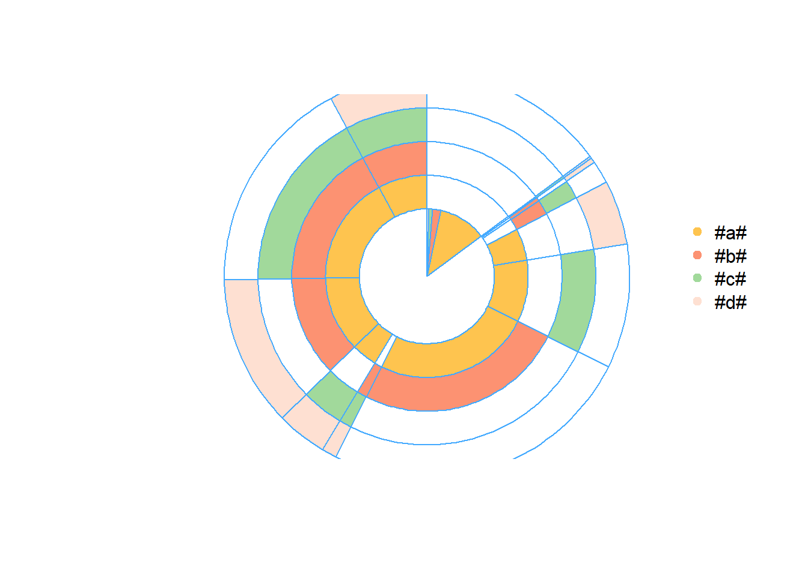
# creating a table with the stats
stat.tab <- prod.matrix %>%
select(-prod.num) %>%
mutate(share = num / tot) %>%
arrange(desc(num))
library(scales)
stat.tab$share <-
percent(stat.tab$share) # converting values to percents
# adding a table with the stats
# addtable2plot(
# -2.5,
# -1.5,
# stat.tab,
# bty = "n",
# display.rownames = FALSE,
# hlines = FALSE,
# vlines = FALSE,
# title = "The stats"
# )22.5.2 Sankey Diagram
# loading libraries
library(googleVis)
library(dplyr)
library(reshape2)
# creating an example of orders
set.seed(15)
df <- data.frame(
orderId = c(1:1000),
clientId = sample(c(1:300), 1000, replace = TRUE),
prod1 = sample(
c('NULL', 'a'),
1000,
replace = TRUE,
prob = c(0.15, 0.5)
),
prod2 = sample(
c('NULL', 'b'),
1000,
replace = TRUE,
prob = c(0.15, 0.3)
),
prod3 = sample(
c('NULL', 'c'),
1000,
replace = TRUE,
prob = c(0.15, 0.2)
)
)
# combining products
df$cart <- paste(df$prod1, df$prod2, df$prod3, sep = ';')
df$cart <- gsub('NULL;|;NULL', '', df$cart)
df <- df[df$cart != 'NULL',]
df <- df %>%
select(orderId, clientId, cart) %>%
arrange(clientId, orderId, cart)
head(df)## orderId clientId cart
## 1 181 1 b
## 2 282 1 a
## 3 748 1 a;b;c
## 4 27 2 a;b
## 5 209 2 b;c
## 6 244 2 a;b;c
orders <- df %>%
group_by(clientId) %>%
mutate(n.ord = paste('ord', c(1:n()), sep = '')) %>%
ungroup()
head(orders)## # A tibble: 6 × 4
## orderId clientId cart n.ord
## <int> <int> <chr> <chr>
## 1 181 1 b ord1
## 2 282 1 a ord2
## 3 748 1 a;b;c ord3
## 4 27 2 a;b ord1
## 5 209 2 b;c ord2
## 6 244 2 a;b;c ord3
orders <-
dcast(orders,
clientId ~ n.ord,
value.var = 'cart',
fun.aggregate = NULL)
# choose a number of carts/orders in the sequence we want to analyze
orders <- orders %>%
select(ord1, ord2, ord3, ord4, ord5)
orders.plot <- data.frame()
for (i in 2:ncol(orders)) {
ord.cache <- orders %>%
group_by(orders[, i - 1], orders[, i]) %>%
summarise(n = n()) %>%
ungroup()
colnames(ord.cache)[1:2] <- c('from', 'to')
# adding tags to carts
ord.cache$from <- paste(ord.cache$from, '(', i - 1, ')', sep = '')
ord.cache$to <- paste(ord.cache$to, '(', i, ')', sep = '')
orders.plot <- rbind(orders.plot, ord.cache)
}
plot(gvisSankey(
orders.plot,
from = 'from',
to = 'to',
weight = 'n',
options = list(
height = 900,
width = 1800,
sankey = "{link:{color:{fill:'lightblue'}}}"
)
))
# The bandwidths correspond to the weight of sequence22.5.3 Sequence in-depth analysis
Example by Sergey Bryl
-
To understand customer’s behavior and churn based on purchase sequence. For example,
If the customer has left or did not make the next purchase
Understand duration between purchases
library(dplyr)
library(TraMineR)
library(reshape2)
library(googleVis)
# creating an example of shopping carts
set.seed(10)
data <- data.frame(
orderId = sample(c(1:1000), 5000, replace = TRUE),
product = sample(
c('NULL', 'a', 'b', 'c'), # assume we have only 3 products
5000,
replace = TRUE,
prob = c(0.15, 0.65, 0.3, 0.15)
)
)
# we also know customers' purchase order
order <- data.frame(orderId = c(1:1000),
clientId = sample(c(1:300), 1000, replace = TRUE))
# suppose we know customers' gender
sex <- data.frame(clientId = c(1:300),
sex = sample(
c('male', 'female'),
300,
replace = TRUE,
prob = c(0.40, 0.60)
))
date <- data.frame(orderId = c(1:1000),
orderdate = sample((1:90), 1000, replace = TRUE))
orders <- merge(data, order, by = 'orderId')
orders <- merge(orders, sex, by = 'clientId')
orders <- merge(orders, date, by = 'orderId')
orders <- orders[orders$product != 'NULL',]
orders$orderdate <- as.Date(orders$orderdate, origin = "2012-01-01")
rm(data, date, order, sex)
head(orders)## orderId clientId product sex orderdate
## 1 1 204 a female 2012-02-11
## 2 1 204 a female 2012-02-11
## 3 1 204 a female 2012-02-11
## 4 1 204 a female 2012-02-11
## 5 2 71 a male 2012-02-27
## 6 2 71 a male 2012-02-27
# combining products to the cart (include cases where customers make 2 visits in a day)
df <- orders %>%
arrange(product) %>%
select(-orderId) %>%
unique() %>%
group_by(clientId, sex, orderdate) %>%
summarise(cart = paste(product, collapse = ";")) %>%
ungroup()
head(df)## # A tibble: 6 × 4
## clientId sex orderdate cart
## <int> <chr> <date> <chr>
## 1 1 female 2012-02-18 a;c
## 2 1 female 2012-03-19 a;b;c
## 3 1 female 2012-03-21 a;b;c
## 4 2 female 2012-02-14 a;b
## 5 2 female 2012-02-27 a;b
## 6 2 female 2012-03-06 a
max.date <- max(df$orderdate) + 1
ids <- unique(df$clientId)
df.new <- data.frame()
for (i in 1:length(ids)) {
df.cache <- df %>%
filter(clientId == ids[i])
ifelse(nrow(df.cache) == 1,
av.dur <- 30,
av.dur <-
round(((
max(df.cache$orderdate) - min(df.cache$orderdate)
) / (
nrow(df.cache) - 1
)) * 1.5, 0))
df.cache <-
rbind(
df.cache,
data.frame(
clientId = df.cache$clientId[nrow(df.cache)],
sex = df.cache$sex[nrow(df.cache)],
orderdate = max(df.cache$orderdate) + av.dur,
cart = 'nopurch'
)
)
ifelse(max(df.cache$orderdate) > max.date,
df.cache$orderdate[which.max(df.cache$orderdate)] <- max.date,
NA)
df.cache$to <- c(df.cache$orderdate[2:nrow(df.cache)] - 1, max.date)
# order# for Sankey diagram
df.cache <- df.cache %>%
mutate(ord = paste('ord', c(1:nrow(df.cache)), sep = ''))
df.new <- rbind(df.new, df.cache)
}
# filtering dummies
df.new <- df.new %>%
filter(cart != 'nopurch' | to != orderdate)
rm(orders, df, df.cache, i, ids, max.date, av.dur)
##### Sankey diagram #######
df.sankey <- df.new %>%
select(clientId, cart, ord)
df.sankey <-
dcast(df.sankey,
clientId ~ ord,
value.var = 'cart',
fun.aggregate = NULL)
df.sankey[is.na(df.sankey)] <- 'unknown'
# chosing a length of sequence
df.sankey <- df.sankey %>%
select(ord1, ord2, ord3, ord4)
# replacing NAs after 'nopurch' for 'nopurch'
df.sankey[df.sankey[, 2] == 'nopurch', 3] <- 'nopurch'
df.sankey[df.sankey[, 3] == 'nopurch', 4] <- 'nopurch'
df.sankey.plot <- data.frame()
for (i in 2:ncol(df.sankey)) {
df.sankey.cache <- df.sankey %>%
group_by(df.sankey[, i - 1], df.sankey[, i]) %>%
summarise(n = n()) %>%
ungroup()
colnames(df.sankey.cache)[1:2] <- c('from', 'to')
# adding tags to carts
df.sankey.cache$from <-
paste(df.sankey.cache$from, '(', i - 1, ')', sep = '')
df.sankey.cache$to <- paste(df.sankey.cache$to, '(', i, ')', sep = '')
df.sankey.plot <- rbind(df.sankey.plot, df.sankey.cache)
}
plot(gvisSankey(
df.sankey.plot,
from = 'from',
to = 'to',
weight = 'n',
options = list(
height = 900,
width = 1800,
sankey = "{link:{color:{fill:'lightblue'}}}"
)
))
rm(df.sankey, df.sankey.cache, df.sankey.plot, i)
df.new <- df.new %>%
# chosing a length of sequence
filter(ord %in% c('ord1', 'ord2', 'ord3', 'ord4')) %>%
select(-ord)
# converting dates to numbers
min.date <- as.Date(min(df.new$orderdate), format = "%Y-%m-%d")
df.new$orderdate <- as.numeric(df.new$orderdate - min.date + 1)
df.new$to <- as.numeric(df.new$to - min.date + 1)
df.form <-
seqformat(
as.data.frame(df.new),
id = 'clientId',
begin = 'orderdate',
end = 'to',
status = 'cart',
from = 'SPELL',
to = 'STS',
process = FALSE
)
df.seq <-
seqdef(df.form,
left = 'DEL',
right = 'unknown',
xtstep = 10) # xtstep - step between ticks (days)
summary(df.seq)## [>] sequence object created with TraMineR version 2.2-7
## [>] 288 sequences in the data set, 286 unique
## [>] min/max sequence length: 4/91
## [>] alphabet (state labels):
## 1=a (a)
## 2=a;b (a;b)
## 3=a;b;c (a;b;c)
## 4=a;c (a;c)
## 5=b (b)
## 6=b;c (b;c)
## 7=c (c)
## 8=nopurch (nopurch)
## 9=unknown (unknown)
## [>] dimensionality of the sequence space: 728
## [>] colors: 1=#8DD3C7 2=#FFFFB3 3=#BEBADA 4=#FB8072 5=#80B1D3 6=#FDB462 7=#B3DE69 8=#FCCDE5 9=#D9D9D9
## [>] symbol for void element: %
df.feat <- unique(df.new[, c('clientId', 'sex')])
# distribution analysis
seqdplot(df.seq, border = NA, withlegend = 'right')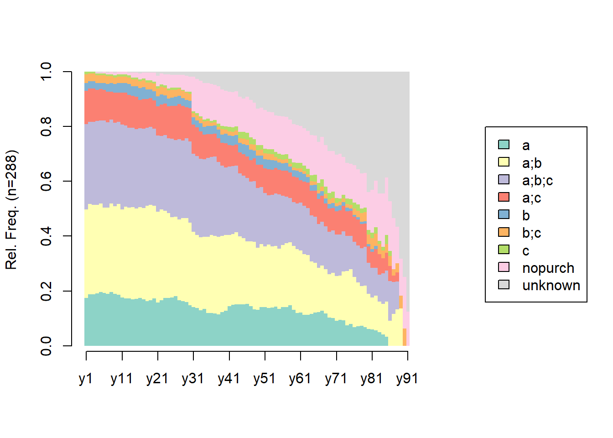
seqdplot(df.seq, border = NA, group = df.feat$sex) # distribution based on gender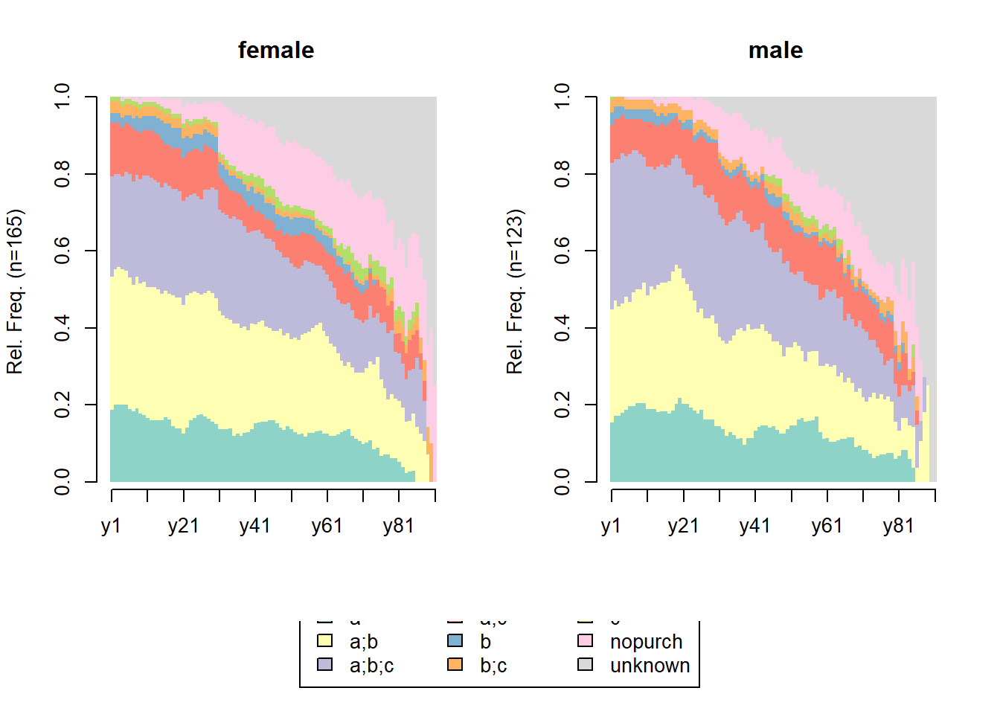
seqstatd(df.seq)## [State frequencies]
## y1 y2 y3 y4 y5 y6 y7 y8 y9 y10 y11
## a 0.174 0.1875 0.1875 0.1910 0.1951 0.192 0.1888 0.196 0.1895 0.187 0.176
## a;b 0.323 0.3299 0.3264 0.3229 0.3240 0.311 0.3147 0.323 0.3193 0.331 0.320
## a;b;c 0.312 0.2986 0.3021 0.3056 0.3031 0.318 0.3112 0.305 0.3053 0.299 0.310
## a;c 0.122 0.1215 0.1215 0.1146 0.1150 0.112 0.1119 0.102 0.1088 0.106 0.116
## b 0.028 0.0278 0.0278 0.0243 0.0209 0.024 0.0280 0.032 0.0316 0.035 0.035
## b;c 0.031 0.0278 0.0278 0.0278 0.0279 0.028 0.0280 0.025 0.0246 0.025 0.025
## c 0.010 0.0069 0.0069 0.0069 0.0070 0.007 0.0070 0.007 0.0070 0.007 0.007
## nopurch 0.000 0.0000 0.0000 0.0035 0.0035 0.007 0.0070 0.011 0.0105 0.011 0.011
## unknown 0.000 0.0000 0.0000 0.0035 0.0035 0.000 0.0035 0.000 0.0035 0.000 0.000
## y12 y13 y14 y15 y16 y17 y18 y19 y20 y21
## a 0.173 0.1725 0.1696 0.1702 0.1744 0.1685 0.1619 0.1655 0.1727 0.1583
## a;b 0.335 0.3310 0.3357 0.3298 0.3310 0.3333 0.3489 0.3489 0.3381 0.3309
## a;b;c 0.296 0.2923 0.2898 0.2908 0.2883 0.2903 0.2842 0.2842 0.2806 0.2770
## a;c 0.120 0.1197 0.1166 0.1170 0.1032 0.1075 0.1043 0.1043 0.1043 0.1079
## b 0.035 0.0387 0.0353 0.0390 0.0427 0.0430 0.0360 0.0324 0.0324 0.0360
## b;c 0.025 0.0246 0.0247 0.0248 0.0249 0.0251 0.0252 0.0252 0.0288 0.0288
## c 0.007 0.0070 0.0071 0.0071 0.0071 0.0072 0.0072 0.0072 0.0072 0.0072
## nopurch 0.011 0.0106 0.0177 0.0177 0.0214 0.0215 0.0288 0.0288 0.0324 0.0396
## unknown 0.000 0.0035 0.0035 0.0035 0.0071 0.0036 0.0036 0.0036 0.0036 0.0144
## y22 y23 y24 y25 y26 y27 y28 y29 y30 y31
## a 0.1667 0.1739 0.1745 0.1758 0.1801 0.1661 0.1624 0.1587 0.1481 0.1407
## a;b 0.3297 0.3188 0.3091 0.2930 0.2904 0.2952 0.3026 0.3063 0.3000 0.2741
## a;b;c 0.2681 0.2754 0.2727 0.2857 0.2794 0.2915 0.2841 0.2915 0.2963 0.2852
## a;c 0.1159 0.1159 0.1164 0.1209 0.1250 0.1292 0.1255 0.1144 0.1222 0.1074
## b 0.0362 0.0290 0.0291 0.0293 0.0331 0.0295 0.0295 0.0258 0.0259 0.0259
## b;c 0.0290 0.0290 0.0291 0.0293 0.0257 0.0258 0.0258 0.0258 0.0259 0.0148
## c 0.0072 0.0072 0.0073 0.0073 0.0074 0.0037 0.0037 0.0037 0.0074 0.0074
## nopurch 0.0399 0.0399 0.0509 0.0476 0.0478 0.0480 0.0554 0.0590 0.0556 0.1259
## unknown 0.0072 0.0109 0.0109 0.0110 0.0110 0.0111 0.0111 0.0148 0.0185 0.0185
## y32 y33 y34 y35 y36 y37 y38 y39 y40 y41 y42
## a 0.1370 0.1296 0.1338 0.1199 0.1199 0.1170 0.114 0.122 0.127 0.144 0.149
## a;b 0.2667 0.2667 0.2639 0.2772 0.2846 0.2830 0.284 0.279 0.277 0.261 0.259
## a;b;c 0.2889 0.2852 0.2825 0.2884 0.2846 0.2906 0.273 0.256 0.246 0.249 0.247
## a;c 0.1037 0.1000 0.0892 0.0861 0.0824 0.0830 0.087 0.084 0.088 0.078 0.075
## b 0.0259 0.0296 0.0297 0.0300 0.0300 0.0302 0.030 0.031 0.035 0.035 0.035
## b;c 0.0185 0.0185 0.0186 0.0187 0.0112 0.0113 0.011 0.019 0.015 0.016 0.016
## c 0.0074 0.0074 0.0074 0.0075 0.0075 0.0075 0.011 0.011 0.012 0.016 0.016
## nopurch 0.1259 0.1296 0.1338 0.1311 0.1348 0.1283 0.136 0.134 0.131 0.128 0.129
## unknown 0.0259 0.0333 0.0409 0.0412 0.0449 0.0491 0.053 0.065 0.069 0.074 0.075
## y43 y44 y45 y46 y47 y48 y49 y50 y51 y52 y53 y54
## a 0.151 0.151 0.151 0.153 0.145 0.133 0.130 0.140 0.140 0.137 0.140 0.142
## a;b 0.263 0.247 0.241 0.227 0.236 0.246 0.227 0.230 0.221 0.232 0.223 0.222
## a;b;c 0.243 0.231 0.229 0.231 0.219 0.221 0.218 0.209 0.196 0.180 0.188 0.191
## a;c 0.076 0.076 0.078 0.079 0.079 0.083 0.084 0.081 0.089 0.094 0.092 0.093
## b 0.036 0.036 0.037 0.041 0.037 0.029 0.034 0.034 0.034 0.034 0.035 0.027
## b;c 0.016 0.016 0.020 0.021 0.021 0.021 0.021 0.021 0.021 0.021 0.022 0.013
## c 0.016 0.024 0.024 0.025 0.025 0.021 0.017 0.017 0.017 0.017 0.017 0.018
## nopurch 0.127 0.127 0.122 0.132 0.136 0.133 0.134 0.136 0.140 0.137 0.135 0.133
## unknown 0.072 0.092 0.098 0.091 0.103 0.112 0.134 0.132 0.140 0.146 0.148 0.160
## y55 y56 y57 y58 y59 y60 y61 y62 y63 y64 y65
## a 0.135 0.140 0.142 0.1475 0.1308 0.1190 0.121 0.1127 0.1133 0.116 0.122
## a;b 0.220 0.226 0.233 0.2304 0.2336 0.2333 0.227 0.2206 0.2167 0.192 0.180
## a;b;c 0.197 0.181 0.169 0.1613 0.1589 0.1667 0.174 0.1765 0.1724 0.167 0.169
## a;c 0.090 0.090 0.096 0.0922 0.0935 0.0952 0.082 0.0882 0.0936 0.091 0.095
## b 0.027 0.027 0.027 0.0230 0.0234 0.0238 0.029 0.0294 0.0197 0.020 0.021
## b;c 0.013 0.014 0.014 0.0092 0.0093 0.0095 0.014 0.0098 0.0099 0.015 0.011
## c 0.018 0.018 0.018 0.0184 0.0187 0.0190 0.019 0.0196 0.0197 0.020 0.026
## nopurch 0.139 0.140 0.137 0.1429 0.1402 0.1381 0.135 0.1373 0.1379 0.146 0.143
## unknown 0.161 0.163 0.164 0.1751 0.1916 0.1952 0.198 0.2059 0.2167 0.232 0.233
## y66 y67 y68 y69 y70 y71 y72 y73 y74 y75 y76
## a 0.123 0.127 0.117 0.102 0.101 0.091 0.094 0.093 0.075 0.0786 0.0682
## a;b 0.160 0.166 0.162 0.159 0.166 0.164 0.163 0.179 0.197 0.2000 0.1818
## a;b;c 0.160 0.160 0.156 0.153 0.154 0.152 0.150 0.146 0.129 0.1214 0.1288
## a;c 0.091 0.094 0.084 0.085 0.083 0.085 0.087 0.093 0.088 0.0929 0.0909
## b 0.021 0.017 0.017 0.017 0.018 0.018 0.019 0.013 0.014 0.0071 0.0076
## b;c 0.011 0.017 0.017 0.017 0.018 0.012 0.012 0.013 0.014 0.0143 0.0227
## c 0.027 0.028 0.028 0.023 0.024 0.018 0.012 0.013 0.020 0.0214 0.0227
## nopurch 0.150 0.155 0.151 0.153 0.148 0.158 0.163 0.139 0.129 0.1286 0.1364
## unknown 0.257 0.238 0.268 0.290 0.290 0.303 0.300 0.311 0.333 0.3357 0.3409
## y77 y78 y79 y80 y81 y82 y83 y84 y85 y86 y87
## a 0.0714 0.0726 0.0672 0.0603 0.0588 0.057 0.049 0.042 0.032 0.000 0.000
## a;b 0.1587 0.1452 0.1513 0.1293 0.1176 0.125 0.111 0.111 0.129 0.091 0.116
## a;b;c 0.1349 0.1371 0.1429 0.1121 0.1078 0.102 0.099 0.111 0.113 0.145 0.116
## a;c 0.0952 0.0887 0.0840 0.0603 0.0588 0.068 0.074 0.056 0.065 0.055 0.023
## b 0.0079 0.0081 0.0084 0.0086 0.0098 0.011 0.000 0.000 0.000 0.000 0.000
## b;c 0.0238 0.0323 0.0336 0.0345 0.0392 0.045 0.037 0.028 0.032 0.036 0.023
## c 0.0238 0.0161 0.0168 0.0172 0.0196 0.023 0.012 0.014 0.032 0.018 0.000
## nopurch 0.1270 0.1290 0.1261 0.1379 0.1569 0.170 0.173 0.194 0.210 0.182 0.186
## unknown 0.3571 0.3710 0.3697 0.4397 0.4314 0.398 0.444 0.444 0.387 0.473 0.535
## y88 y89 y90 y91
## a 0.000 0.000 0.000 0.00
## a;b 0.133 0.136 0.000 0.00
## a;b;c 0.100 0.000 0.000 0.00
## a;c 0.033 0.000 0.000 0.00
## b 0.000 0.000 0.000 0.00
## b;c 0.033 0.045 0.062 0.00
## c 0.000 0.000 0.000 0.00
## nopurch 0.133 0.136 0.188 0.12
## unknown 0.567 0.682 0.750 0.88
##
## [Valid states]
## y1 y2 y3 y4 y5 y6 y7 y8 y9 y10 y11 y12 y13 y14 y15 y16 y17 y18
## N 288 288 288 288 287 286 286 285 285 284 284 284 284 283 282 281 279 278
## y19 y20 y21 y22 y23 y24 y25 y26 y27 y28 y29 y30 y31 y32 y33 y34 y35 y36
## N 278 278 278 276 276 275 273 272 271 271 271 270 270 270 270 269 267 267
## y37 y38 y39 y40 y41 y42 y43 y44 y45 y46 y47 y48 y49 y50 y51 y52 y53 y54
## N 265 264 262 260 257 255 251 251 245 242 242 240 238 235 235 233 229 225
## y55 y56 y57 y58 y59 y60 y61 y62 y63 y64 y65 y66 y67 y68 y69 y70 y71 y72
## N 223 221 219 217 214 210 207 204 203 198 189 187 181 179 176 169 165 160
## y73 y74 y75 y76 y77 y78 y79 y80 y81 y82 y83 y84 y85 y86 y87 y88 y89 y90
## N 151 147 140 132 126 124 119 116 102 88 81 72 62 55 43 30 22 16
## y91
## N 8
##
## [Entropy index]
## y1 y2 y3 y4 y5 y6 y7 y8 y9 y10 y11 y12 y13 y14 y15
## H 0.7 0.7 0.7 0.71 0.71 0.71 0.72 0.71 0.72 0.71 0.72 0.72 0.73 0.73 0.74
## y16 y17 y18 y19 y20 y21 y22 y23 y24 y25 y26 y27 y28 y29
## H 0.75 0.74 0.74 0.74 0.75 0.77 0.77 0.77 0.78 0.78 0.78 0.77 0.78 0.77
## y30 y31 y32 y33 y34 y35 y36 y37 y38 y39 y40 y41 y42 y43
## H 0.78 0.8 0.81 0.82 0.82 0.82 0.81 0.81 0.82 0.84 0.85 0.85 0.86 0.86
## y44 y45 y46 y47 y48 y49 y50 y51 y52 y53 y54 y55 y56 y57
## H 0.87 0.88 0.89 0.89 0.88 0.89 0.89 0.89 0.89 0.9 0.88 0.88 0.88 0.88
## y58 y59 y60 y61 y62 y63 y64 y65 y66 y67 y68 y69 y70 y71
## H 0.87 0.87 0.87 0.88 0.88 0.87 0.88 0.88 0.88 0.88 0.87 0.86 0.86 0.85
## y72 y73 y74 y75 y76 y77 y78 y79 y80 y81 y82 y83 y84 y85
## H 0.84 0.84 0.83 0.82 0.83 0.83 0.82 0.82 0.78 0.79 0.81 0.75 0.74 0.78
## y86 y87 y88 y89 y90 y91
## H 0.69 0.6 0.6 0.43 0.32 0.17
df.seq <- seqdef(df.form,
left = 'DEL',
right = 'DEL',
xtstep = 10)
# the 10 most frequent sequences
seqfplot(df.seq, border = NA, withlegend = 'right')
# the 10 most frequent sequences based on gender
seqfplot(df.seq, group = df.feat$sex, border = NA)
# returning the frequency stats
seqtab(df.seq) # frequency table## Freq Percent
## a;b/63 2 0.69
## a;b/89 2 0.69
## a;c/30-a;b;c/13 2 0.69
## a/10-a;b;c/11-a;c/33-a;b/4 1 0.35
## a/10-a;b;c/6-a;b/34-a;b;c/25 1 0.35
## a/11-a;b;c/55-b;c/16 1 0.35
## a/14-a;b/50-c/7 1 0.35
## a/14-a;b/8-a;b;c/16-nopurch/11 1 0.35
## a/15-a;b;c/55-c/4 1 0.35
## a/15-a;c/6-b;c/14-a;b;c/11 1 0.35
seqtab(df.seq[, 1:30]) # frequency table for 1st month## Freq Percent
## a;b;c/30 41 14.24
## a;b/30 40 13.89
## a/30 24 8.33
## a;c/30 15 5.21
## b;c/30 4 1.39
## a;b/1-a;b;c/29 2 0.69
## a;b;c/28-a;b/2 2 0.69
## a;c/15-a;b/15 2 0.69
## a;c/7-a;b/23 2 0.69
## b/30 2 0.69
# mean time spent in each state
seqmtplot(df.seq, title = 'Mean time', withlegend = 'right')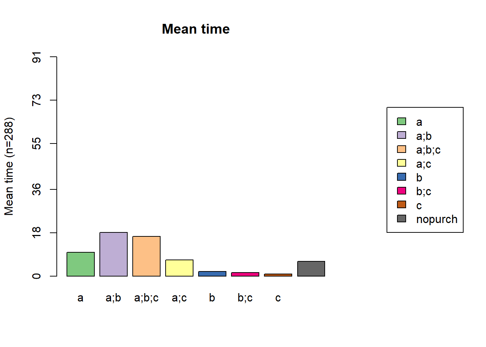
seqmtplot(df.seq, group = df.feat$sex, title = 'Mean time')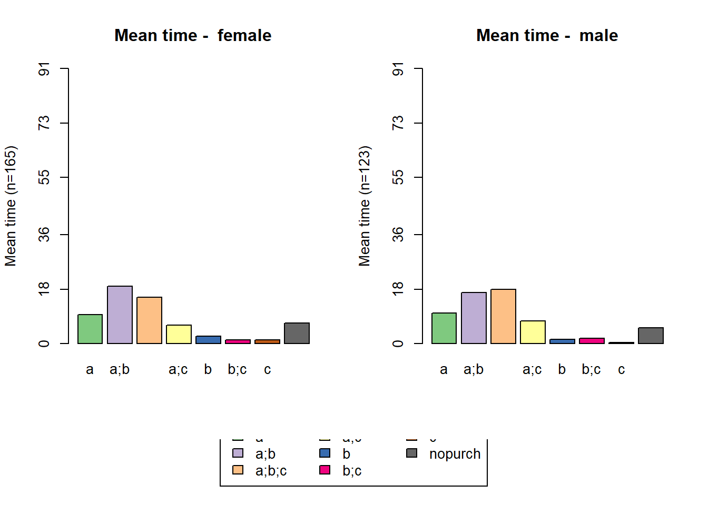
statd <-
seqistatd(df.seq) #function returns for each sequence the time spent in the different states
apply(statd, 2, mean) #We may be interested in the mean time spent in each state## a a;b a;b;c a;c b b;c c
## 9.7916667 18.0416667 16.4201389 6.6840278 1.9236111 1.4583333 0.8611111
## nopurch
## 6.0694444
# calculating entropy
df.ient <- seqient(df.seq)
hist(df.ient,
col = 'cyan',
main = NULL,
xlab = 'Entropy') # plot an histogram of the within entropy of the sequences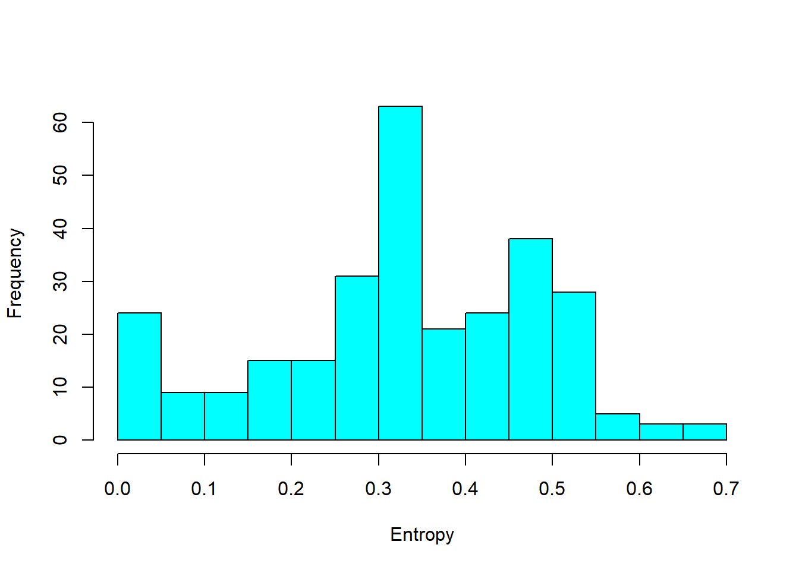
# entrophy distribution based on gender
df.ent <- cbind(df.seq, df.ient)
boxplot(
Entropy ~ df.feat$sex,
data = df.ent,
xlab = 'Gender',
ylab = 'Sequences entropy',
col = 'cyan'
)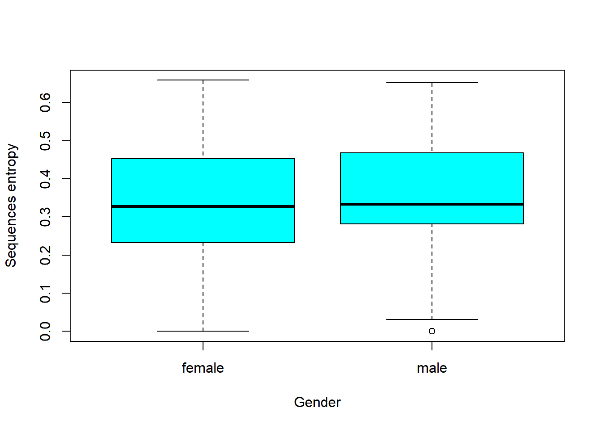
22.6 Geodemographic Classification
Example by Nick Bearman
#Load libraries
library(scales)
library(ggplot2)
#set up data and data frame
oac_names <-
c(
"Blue Collar Communities",
"City Living",
"Countryside",
"Prospering Suburbs",
"Constrained by Circumstances",
"Typical Traits",
"Multicultural"
)
broadsheets <- c(73.2, 144, 103.9, 109.1, 78.2, 97.1, 120.2)
oac_broadsheets <- data.frame(oac_names, broadsheets)
#convert the percentage values (e.g. 144%) to decimal increase or decrease (e.g. 0.44)
oac_broadsheets$broadsheets <- broadsheets / 100 - 1
oac_broadsheets## oac_names broadsheets
## 1 Blue Collar Communities -0.268
## 2 City Living 0.440
## 3 Countryside 0.039
## 4 Prospering Suburbs 0.091
## 5 Constrained by Circumstances -0.218
## 6 Typical Traits -0.029
## 7 Multicultural 0.202plot each group’s percentage difference from the mean
#select the colours we are going to use
my_colour <-
c("#33A1C9",
"#FFEC8B",
"#A2CD5A",
"#CD7054",
"#B7B7B7",
"#9F79EE",
"#FCC08F")
#plot the graph - this has several bits to it
#the first three lines setup the data and type of graph
ggplot(oac_broadsheets, aes(oac_names, broadsheets)) +
geom_bar(stat = "identity",
fill = my_colour,
position = "identity") +
theme(axis.text.x = element_text(
angle = 90,
hjust = 1,
vjust = 1,
size = 12
)) +
#this line add the lables to each bar
geom_text(aes(
label = paste(round(broadsheets * 100, digits = 0), "%"),
vjust = ifelse(broadsheets >= 0,-0.5, 1.5)
), size = 3) +
#these lines as the axis labels and these fonts
theme(axis.title.x = element_text(size = 12)) +
theme(axis.title.y = element_text(size = 12)) +
scale_y_continuous("Difference from national average for broadsheet", labels = percent_format()) +
scale_x_discrete("OAC SuperGroups")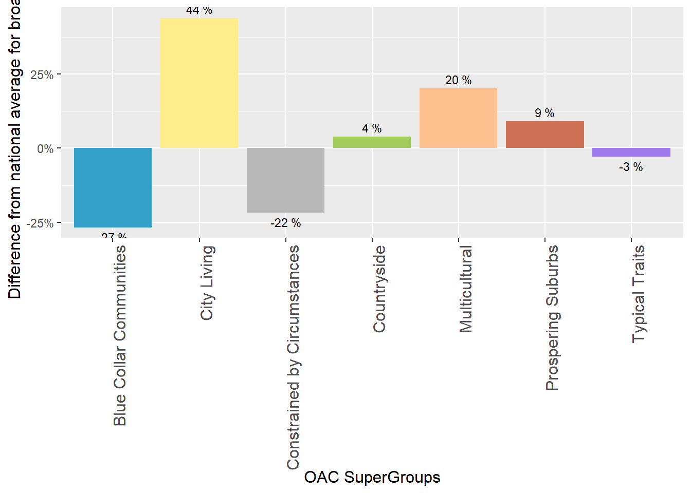
Create plot for another variable
tabloids <- c(110.8, 82.2, 104.9, 94.5, 108.4, 96.4, 96.0)
oac_tabloids <- data.frame(oac_names, tabloids)
#convert the percentage values (e.g. 144%) to decimal increase or decrease (e.g. 0.44)
oac_tabloids$tabloids <- tabloids / 100 - 1
oac_tabloids## oac_names tabloids
## 1 Blue Collar Communities 0.108
## 2 City Living -0.178
## 3 Countryside 0.049
## 4 Prospering Suburbs -0.055
## 5 Constrained by Circumstances 0.084
## 6 Typical Traits -0.036
## 7 Multicultural -0.040
# plot
ggplot(oac_tabloids, aes(oac_names, tabloids)) +
geom_bar(stat = "identity",
fill = my_colour,
position = "identity") +
theme(axis.text.x = element_text(
angle = 90,
hjust = 1,
vjust = 1,
size = 12
)) +
#this line add the lables to each bar
geom_text(aes(
label = paste(round(tabloids * 100, digits = 0), "%"),
vjust = ifelse(tabloids >= 0, -0.5, 1.5)
), size = 3) +
#these lines as the axis labels and these fonts
theme(axis.title.x = element_text(size = 12)) +
theme(axis.title.y = element_text(size = 12)) +
scale_y_continuous("Difference from national average for tabloids", labels = percent_format()) +
scale_x_discrete("OAC SuperGroups")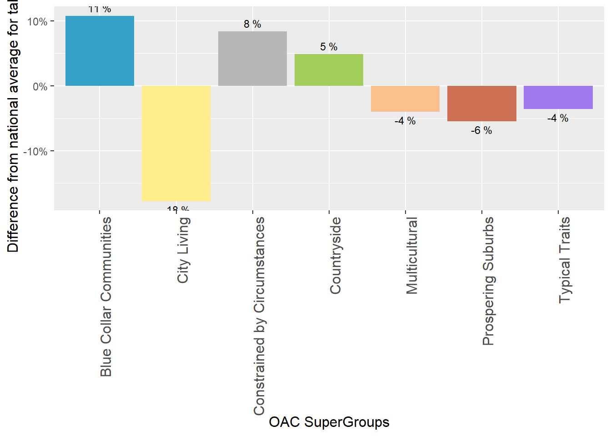
To visualize how these two variables are distributed in a location such as Liverpool in this case.
We load the shapefile
#load library
library(maptools)
#download file
# download.file("https://raw.githubusercontent.com/nickbearman/r-geodemographic-analysis-20140710/master/liverpool_OA.zip", "liverpool_OA.zip", method = "internal") #if you are running this on OSX, you will need to replace method = "internal" with method = "curl"
#unzip file
unzip("images/liverpool_OA.zip")
#read in shapefile
liverpool <- readShapeSpatial('liverpool_OA/liverpool', proj4string = CRS("+init=epsg:27700"))
plot(liverpool)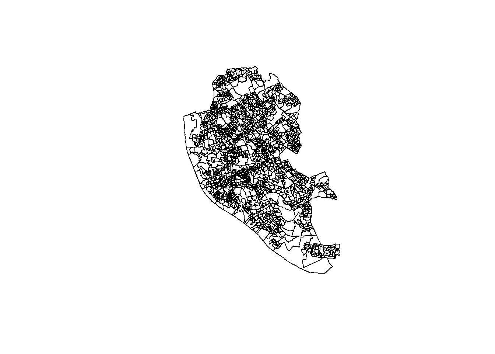
The dataset can be attained here select 2011 OAC Clusters and Names csv (1.1 Mb ZIP)
library(tidyverse)
#read in OAC by OA csv file
OAC <- rio::import("images/2011oacclustersandnamescsvv2.zip") %>%
select(
"Output Area Code",
"Supergroup Name",
"Supergroup Code",
"Group Name",
"Group Code",
"Subgroup Name",
"Subgroup Code"
) %>%
rename("OA_CODE" = "Output Area Code")Merge data (OAC) to its location (liverpool)
# check dataset
# head(liverpool@data)
# head(OAC)
#Join OAC classification on to LSOA shapefile
liverpool@data = data.frame(liverpool@data, OAC[match(liverpool@data[, "OA01CD"], OAC[, "OA_CODE"]),]) %>% drop_na()
#Show head of liverpool
head(liverpool@data)## OA01CD OA01CDOLD OA_CODE Supergroup.Name Supergroup.Code
## 2 E00032987 00BYFA0003 E00032987 Ethnicity Central 3
## 3 E00032988 00BYFA0004 E00032988 Cosmopolitans 2
## 4 E00032989 00BYFA0005 E00032989 Ethnicity Central 3
## 5 E00032990 00BYFA0006 E00032990 Ethnicity Central 3
## 6 E00032991 00BYFA0007 E00032991 Ethnicity Central 3
## 7 E00032992 00BYFA0008 E00032992 Ethnicity Central 3
## Group.Name Group.Code Subgroup.Name
## 2 Ethnic Family Life 3a Established Renting Families
## 3 Students Around Campus 2a Students and Professionals
## 4 Endeavouring Ethnic Mix 3b Multi-Ethnic Professional Service Workers
## 5 Aspirational Techies 3d Old EU Tech Workers
## 6 Endeavouring Ethnic Mix 3b Multi-Ethnic Professional Service Workers
## 7 Endeavouring Ethnic Mix 3b Striving Service Workers
## Subgroup.Code
## 2 3a1
## 3 2a3
## 4 3b3
## 5 3d3
## 6 3b3
## 7 3b1
#Define a set of colours, one for each of the OAC supergroups
my_colour <-
c("#33A1C9",
"#FFEC8B",
"#A2CD5A",
"#CD7054",
"#B7B7B7",
"#9F79EE",
"#FCC08F")
#Create a basic OAC choropleth map
plot(liverpool,
col = my_colour[liverpool@data$Supergroup.Code],
axes = FALSE,
border = NA)
#Name the groups we've used
oac_names <-
liverpool@data %>% select(Supergroup.Name, Supergroup.Code) %>% unique() %>% arrange(Supergroup.Code) %>% select(Supergroup.Name) %>% deframe()
#Add the legend (the oac_names object was created earlier)
legend(
x = 332210,
y = 385752,
legend = oac_names,
fill = my_colour,
bty = "n",
cex = .8,
ncol = 1
)
#Add North Arrow
SpatialPolygonsRescale(
layout.north.arrow(2),
offset = c(332610, 385852),
scale = 1600,
plot.grid = F
)
#Add Scale Bar
SpatialPolygonsRescale(
layout.scale.bar(),
offset = c(333210, 381252),
scale = 5000,
fill = c("white", "black"),
plot.grid = F
)
#Add text to scale bar
text(333410, 380952, "0km", cex = .8)
text(333410 + 2500, 380952, "2.5km", cex = .8)
text(333410 + 5000, 380952, "5km", cex = .8)
#Add a title
title("OAC Group Map of Liverpool")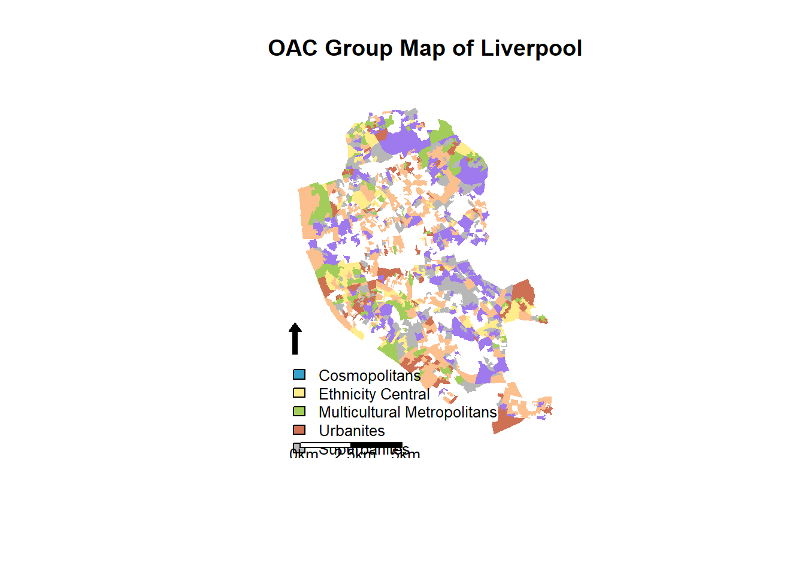